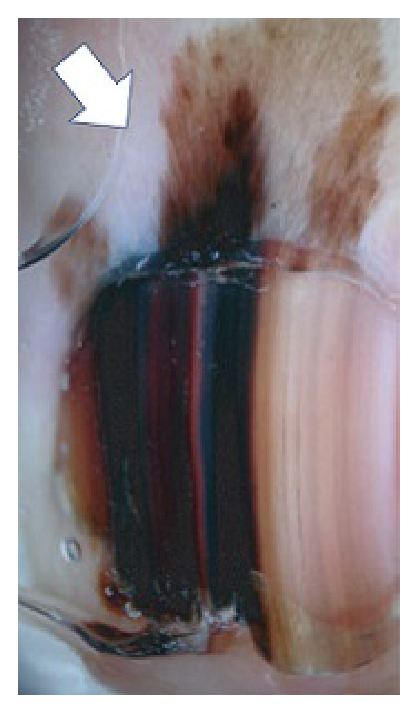
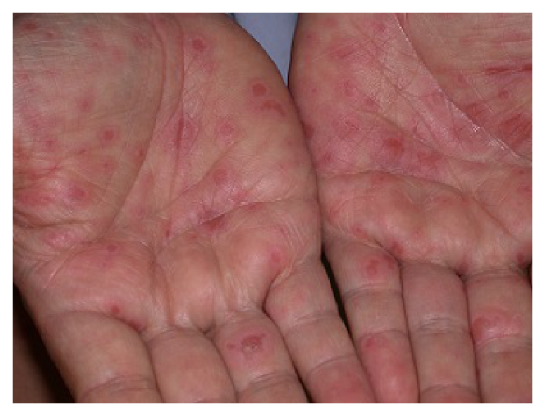
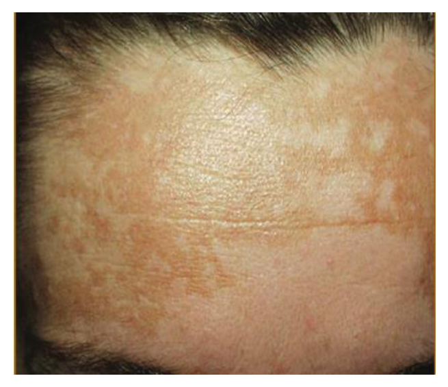
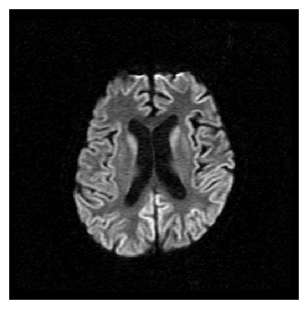
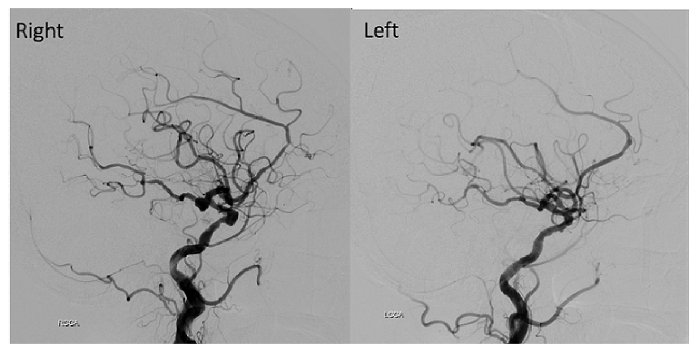

開卷有益 ／
醫師 ／ 醫學（四）（包括小兒科、皮膚科、神經科、精神科等科目及其相關臨床實例與醫學倫理） ／ 113 年第 1 次113 年第 1 次醫師醫學（四）（包括小兒科、皮膚科、神經科、精神科等科目及其相關臨床實例與醫學倫理）試題與答案
這一頁是民國 113 年第 1 次醫師醫學（四）（包括小兒科、皮膚科、神經科、精神科等科目及其相關臨床實例與醫學倫理）的整份歷屆試題，共 80 題，題目與標準答案出自考選部「國家考試試題及測驗式試題答案」開放資料，其中 80 題附有詳解。以下逐題列出題幹、選項與答案；要計時作答或記錄成績，請用線上練習。
考選部原始場次代碼：113020
線上作答這一科 →
全部 80 題
第 1 題
足月新生兒出生時為3000公克，下列有關體重成長的描述，何者最可能屬於異常值？
（A） 3天大時，體重2600公克（B） 5天大時，體重2800公克（C） 1個月大時，體重4000公克（D） 2個月大時，體重4900公克答案：（A）
詳解與考點 正解：出生後早期的生理性體重下降幅度。出生體重為 3000 g，3 天大為 2600 g，減少 400 g；400 ÷ 3000 = 0.133，約為 13.3%。足月新生兒初期雖常有體重下降，但此幅度超過一般可接受的約一成範圍，最可能異常，故選 A。
B：5 天大 2800 g，較出生時少 200 g；200 ÷ 3000 = 0.067，約減少 6.7%，仍可見於出生後的生理性體重下降與回升期。
C：1 個月大 4000 g，較出生時增加 1000 g，與嬰兒早期逐漸恢復並增加體重的趨勢相符，非最可能異常。
D：2 個月大 4900 g，較出生時增加 1900 g，整體成長趨勢可接受，並不像 A 有明顯過度早期失重。
本題考點：新生兒生理性體重下降（physiologic weight loss）；足月嬰兒的體重成長（infant weight gain）；過度體重下降時應評估餵食與脫水。
第 2 題
足月新生兒出生體重3200公克，出生後全母乳哺餵，7天大時體重為3150公克。血清總膽紅素為12 mg/dL，大便顏色正常且活力佳。媽媽非常擔心寶寶體重沒有增加及持續黃疸，下一步處置，下列何者最為適當？
（A） 安排腹部超音波檢查（B） 安排住院照光治療（C） 建議持續追蹤觀察（D） 建議媽媽停餵母奶答案：（C）
詳解與考點 正解：足月、全母乳、7 天大僅較出生體重少 50 g，且大便正常、活力佳、總膽紅素 12 mg/dL。體重變化為 50 ÷ 3200 = 0.016，約減少 1.6%，沒有餵食不足或膽汁鬱積的警訊；此情境可持續母乳哺餵並追蹤黃疸與體重，故選 C。
A：腹部超音波主要用於懷疑膽道阻塞等病因；本例糞便顏色正常，且臨床狀態良好，沒有立即影像檢查的線索。
B：照光治療須依出生後日齡、胎齡、膽紅素值與神經毒性風險分層決定；本例沒有顯示需立刻住院照光的高風險徵象，故不宜直接採取。
D：母乳相關黃疸在嬰兒狀況良好且餵食、排便正常時，通常應支持持續哺餵；停餵母奶看似可讓膽紅素下降，卻會犧牲母乳哺餵並非必要。
本題考點：生理性黃疸（physiologic jaundice）與母乳相關黃疸（breast milk jaundice）的評估；新生兒體重下降（neonatal weight loss）；新生兒高膽紅素血症（neonatal hyperbilirubinemia）的風險分層。
第 3 題
有關早產兒呼吸暫停（apnea of prematurity）診斷的敘述，下列何者最不適當？
（A） 定義為無症狀呼吸中止時間大於10秒（B） 可能伴隨心搏過緩（bradycardia）（C） 可能伴隨發紺（cyanosis）（D） 早產兒呼吸暫停多屬於mixed apnea答案：（A）
詳解與考點 正解：早產兒呼吸暫停的定義。臨床上呼吸停止通常達 20 秒以上，或即使較短但伴隨心搏過緩、發紺或血氧下降，才符合早產兒呼吸暫停（apnea of prematurity）的診斷描述；「無症狀大於 10 秒」不足以定義此病，故最不適當的是 A。
B：呼吸暫停可因低氧與自主神經反應伴隨心搏過緩（bradycardia），敘述正確。
C：發作時可出現發紺（cyanosis）或血氧飽和度下降，故此項正確。
D：早產兒呼吸暫停可分中樞型、阻塞型與混合型，其中混合型（mixed apnea）最常見，敘述正確。
本題考點：早產兒呼吸暫停（apnea of prematurity）的診斷定義；心搏過緩（bradycardia）與發紺（cyanosis）的伴隨表現；混合型呼吸暫停（mixed apnea）。
第 4 題
於產房剛出生的寶寶，經初始步驟處理後，發現呼吸窘迫、心跳每分鐘50下。下一步的處置，何者最為適當？
（A） 開始胸外按壓（B） 給與epinephrine（C） 給與氧氣面罩（D） 給與正壓換氣答案：（D）
詳解與考點 正解：初始步驟後仍有呼吸窘迫且心跳每分鐘 50 下。新生兒復甦的優先問題通常是通氣不足，心率低於每分鐘 100 下時應立即有效正壓換氣（positive-pressure ventilation），故選 D；之後再依心率對通氣的反應決定是否升級處置。
A：胸外按壓適用於已完成有效正壓換氣後，心率仍持續低於每分鐘 60 下的情況；本例首先應矯正通氣。
B：epinephrine 是在通氣與胸外按壓均未使嚴重心搏過緩改善時才考慮的升級措施，不能取代第一步的通氣。
C：單給氧氣面罩無法提供足夠的肺泡通氣與正壓擴張；它看似可改善低氧，但本例低心率的關鍵處置是有效正壓換氣。
本題考點：新生兒復甦（neonatal resuscitation）的通氣優先原則；正壓換氣（positive-pressure ventilation）；依心率反應升級胸外按壓與藥物。
第 5 題
下列關於壞死性腸炎（necrotizing enterocolitis）的敘述，何者最不適當？
（A） 是新生兒時期最常見危及生命的腸胃道急症（B） 三大危險因子為早產、腸道細菌移生（bacterial colonization of the gut）及配方奶餵食（C） 臨床表現可能有活力差、體溫不穩定、腹脹、餵食不耐受、血便等，嚴重者可能腸穿孔、腹膜炎、休克，甚至死亡（D） 腹部X光典型特徵有腸壁積氣（pneumatosis intestinalis），通常在出生後1週內發生答案：（D）
詳解與考點 正解：壞死性腸炎（necrotizing enterocolitis, NEC）的好發時點。腸壁積氣是其典型影像表現，但 NEC 多發生於餵食後的早產兒，通常不是出生後 1 週內最典型；因此把兩者合併稱為「通常在出生後 1 週內發生」不適當，故選 D。
A：NEC 是新生兒期重要且常見的危及生命腸胃道急症，尤其在早產與低出生體重兒，敘述正確。
B：早產、腸道細菌移生與腸道餵食，特別是配方奶餵食，皆是 NEC 的重要危險因子，敘述正確。
C：餵食不耐、腹脹、血便及全身狀況惡化可見於 NEC；病情進展可導致腸穿孔、腹膜炎、休克與死亡，敘述正確。
本題考點：壞死性腸炎（necrotizing enterocolitis, NEC）的危險因子與臨床表現；腸壁積氣（pneumatosis intestinalis）；早產兒腸胃道急症的發病時序。
第 6 題
關於先天性心臟病嬰兒與兒童的一般性照顧原則，下列敘述何者最不適當？
（A） 絕大多數的常規疫苗都可以施打，包括流行性感冒疫苗（B） 呼吸道融合病毒單株抗體的施打對於有血行動力學明顯異常的病人很重要（C） 所有先天性心臟病兒童在做牙科治療前都必須進行細菌性心內膜炎的預防（D） 對於發紺性心臟病的病童，要特別注意脫水與缺鐵性貧血的問題答案：（C）
詳解與考點 正解：「所有」先天性心臟病兒童都須在牙科治療前預防感染性心內膜炎。預防性抗生素只適用於特定高風險心臟狀況與特定牙科處置，並非所有先天性心臟病；「所有」是過度延伸，故最不適當的是 C。
A：多數先天性心臟病兒童可依常規接種疫苗，流行性感冒疫苗亦有助減少呼吸道感染造成的負擔，敘述適當。
B：血行動力學上顯著的先天性心臟病嬰兒發生嚴重呼吸道融合病毒感染的風險較高，給予 RSV 預防性單株抗體具有重要性，敘述適當。
D：發紺性心臟病的病童應避免脫水，並注意缺鐵性貧血對氧氣運送及血液黏稠度的影響，敘述適當。
本題考點：感染性心內膜炎預防（infective endocarditis prophylaxis）的高風險適應症；先天性心臟病（congenital heart disease）的預防照護；呼吸道融合病毒（RSV）預防。
第 7 題
在下列何種危急型先天性心臟病的新生兒中使用前列腺素E1（prostaglandin E1, PGE1），對病情最沒有幫助？
（A） 嚴重主動脈弓窄縮（coarctation of the aorta）（B） 三尖瓣閉鎖（tricuspid atresia）（C） 危急型肺動脈瓣狹窄（critical pulmonary valve stenosis）（D） 上心臟型全肺靜脈回流異常合併阻塞（supracardiac type total anomalous pulmonary venous returnwith obstruction）答案：（D）
詳解與考點 正解：PGE1 的作用為維持或重新開放動脈導管（ductus arteriosus），用來改善導管依賴性肺血流或體循環。上心臟型全肺靜脈回流異常合併阻塞的問題在肺靜脈回流受阻，需緊急解除阻塞；開放動脈導管無法解除此阻塞，故最沒有幫助的是 D。
A：嚴重主動脈弓窄縮可能依賴動脈導管供應下半身體循環，PGE1 可在確診與手術前維持灌流，故有幫助。
B：三尖瓣閉鎖的肺血流可依賴動脈導管，PGE1 能維持肺血流與氧合，故非答案。
C：危急型肺動脈瓣狹窄會限制右心室至肺動脈的血流，維持動脈導管可提供替代肺血流，故有幫助。
本題考點：前列腺素 E1（prostaglandin E1, PGE1）維持動脈導管；導管依賴性心臟病（ductal-dependent heart disease）；阻塞型全肺靜脈回流異常（obstructed TAPVR）的緊急處置概念。
第 8 題
新生兒出生後24小時測量其上肢及下肢血氧飽和度，如果測得血氧異常且下肢血氧飽和度較上肢低10％，因而懷疑是發紺型先天性心臟病，下列何者最不可能？
（A） 左心室發育不全症候群（hypoplastic left heart syndrome）（B） 大動脈轉位（transposition of the great arteries）（C） 輕度及中度肺動脈瓣狹窄 (mild or moderate pulmonary stenosis)（D） 主動脈弓中斷（interrupted aortic arch）答案：（C）
詳解與考點 正解：上肢血氧飽和度比足部高 10%，代表前導管血與後導管血差異，需考慮導管附近的右向左分流或下半身灌流受限。輕度或中度肺動脈瓣狹窄通常不會造成顯著發紺，更不會典型造成這種上下肢差異，故最不可能的是 C。
A：左心室發育不全症候群可使體循環仰賴動脈導管，導管關閉或混合血流異常時可出現下肢氧合較差，故不能排除。
B：大動脈轉位可造成嚴重新生兒發紺；若合併導管層級的血流混合，也可能呈現前後導管血氧差異，故非最不可能。
D：主動脈弓中斷使下半身灌流依賴動脈導管，足部血氧較低是合理線索，故非答案。
本題考點：前導管與後導管血氧（preductal and postductal oxygen saturation）；動脈導管（ductus arteriosus）相關血流；發紺型先天性心臟病（cyanotic congenital heart disease）。
第 9 題
關於先天性巨大結腸症，下列敘述何者最適當？
（A） 致病機轉為在脹大的結腸黏膜下層（submucosal）和肌間層（myenteric plexus）缺少神經節細胞（ganglion cells）（B） 早產兒胎便超過48小時未解，可診斷此疾病（C） 腹脹是最常見症狀，嘔吐、生長不良、腹瀉都可能發生（D） 手術治療唯一方法要先做腸造瘻口（ostomy），等嬰兒營養狀態改善後再做一次確切（definite）的手術答案：（C）
詳解與考點 正解：先天性巨大結腸症（Hirschsprung disease）的臨床表現。遠端無神經節腸段造成功能性阻塞，腹脹最常見，也可有膽汁性嘔吐、餵食困難、生長不良，部分病人會有腸炎相關腹瀉，因此 C 最適當。
A：無神經節細胞的部位是狹窄的遠端腸段，而其近端腸段因糞便滯留而擴張；把缺乏神經節細胞說成發生於脹大的結腸，解剖位置顛倒。
B：足月兒超過 48 小時未排胎便會提高懷疑，但早產兒本身就較常延遲排胎便，且單靠此現象不能診斷，仍須進一步評估。
D：確切治療是切除無神經節腸段並行拉下術（pull-through procedure）；是否先做腸造瘻取決於病況，並非所有病人唯一且必經的兩階段手術。
本題考點：先天性巨大結腸症（Hirschsprung disease）的無神經節腸段；功能性腸阻塞（functional intestinal obstruction）；拉下術（pull-through procedure）。
第 10 題
12歲男童，體重85公斤，因為發燒、上腹痛、背痛與嘔吐到兒科急診就醫。男童無外傷、排尿正常及無腹瀉。身體診察顯示上腹部與背部有壓痛（tenderness）；血清脂解酶（lipase）濃度為正常值上限之5倍；腹部超音波檢查顯示胰臟明顯腫大。下列何項處置最不適當？
（A） 給與鎮痛藥物以控制疼痛（B） 積極給與靜脈輸液補充治療（C） 停止嘔吐後即可開始進食（D） 應常規給與預防性廣效型抗生素答案：（D）
詳解與考點 正解：上腹痛放射至背部、脂解酶達正常上限 5 倍且胰臟腫大，已符合急性胰臟炎（acute pancreatitis）。其初期處置以疼痛控制、靜脈輸液與可耐受時早期腸道營養為主；沒有感染性壞死或其他感染證據時，不應常規給預防性廣效抗生素，故最不適當的是 D。
A：足夠鎮痛是急性胰臟炎的支持性治療核心，可減少疼痛與生理壓力，敘述適當。
B：急性胰臟炎常因血管內液體不足與第三腔室液體移動而需靜脈輸液復甦，積極補液屬合理初始處置。
C：嘔吐緩解且腹痛改善後，可依耐受情形恢復腸道進食；此項看似過早餵食，但並非要求長期禁食，重點是依臨床耐受度調整。
本題考點：急性胰臟炎（acute pancreatitis）的診斷；支持性治療（supportive care）與早期腸道營養；預防性抗生素（prophylactic antibiotics）的非例行使用。
第 11 題
下列肝炎病毒中，何者最容易經由媽媽垂直感染嬰兒？
（A） A型（B） B型（C） C型（D） E型答案：（B）
詳解與考點 正解：各型肝炎病毒的母嬰垂直傳播風險。B 型肝炎病毒（hepatitis B virus, HBV）可在周產期高效率傳給新生兒，尤其母親病毒量高或具高傳染性標記時，因此四者中最容易經母嬰垂直感染的是 B 型，故選 B。
A：A 型肝炎以糞口途徑傳播為主，母嬰垂直傳播不是其典型主要傳播模式，故非答案。
C：C 型肝炎可發生母嬰傳播，但整體垂直感染效率低於未妥善預防的 HBV 感染，故不是本題最佳選項。
D：E 型肝炎雖可能在妊娠期造成嚴重母體疾病，題目所問「最容易」的嬰兒垂直感染比較仍以 HBV 為主，故非答案。
本題考點：B 型肝炎病毒（hepatitis B virus, HBV）的周產期傳播；母嬰垂直感染（vertical transmission）；各型病毒性肝炎的主要傳播途徑。
第 12 題
下列何者最不可能引起高血鉀？
（A） 腎衰竭（renal failure）（B） 使用藥物furosemide（diuretics）（C） 橫紋肌溶解症（rhabdomyolysis）（D） 使用藥物cyclosporine（calcineurin inhibitor）答案：（B）
詳解與考點 正解：高血鉀的常見機轉：排鉀減少或細胞內鉀外移。furosemide 是袢利尿劑（loop diuretic），會增加遠端腎小管鈉送達與尿鉀排泄，典型造成低血鉀而非高血鉀，故最不可能的是 B。
A：腎衰竭會降低腎臟排鉀能力，容易造成高血鉀，敘述符合機轉。
C：橫紋肌溶解使受損肌細胞內的鉀釋放至細胞外，且可能合併急性腎損傷，因此可引起高血鉀。
D：cyclosporine 為鈣調神經磷酸酶抑制劑（calcineurin inhibitor），可影響腎功能與醛固酮相關排鉀機制，可能造成高血鉀。
本題考點：高血鉀症（hyperkalemia）的腎性與細胞崩解原因；袢利尿劑（loop diuretic）的排鉀作用；鈣調神經磷酸酶抑制劑（calcineurin inhibitor）的腎臟副作用。
第 13 題
關於先天性腎源性尿崩症（congenital nephrogenic diabetes insipidus, CNDI），下列敘述何者最不適當？
（A） 最常見的遺傳模式是X-linked recessive（B） 大多數的CNDI是因AQP2基因突變引起（C） CNDI的治療包括要限制鈉的攝取量（D） 藥物治療上建議使用thiazide類的利尿劑答案：（B）
詳解與考點 正解：先天性腎源性尿崩症（congenital nephrogenic diabetes insipidus, CNDI）的最常見基因原因。多數病例與位於 X 染色體的 vasopressin V2 receptor 基因異常有關，AQP2 突變只占較少數，因此稱「大多數由 AQP2 基因突變引起」最不適當，故選 B。
A：最常見的 CNDI 遺傳型態為 X-linked recessive，與 V2 receptor 基因異常相關，敘述正確。
C：限制鈉攝取可減少溶質負荷與尿量，是降低多尿的非藥物治療原則，敘述正確。
D：thiazide 類利尿劑可藉由輕度容量收縮增加近端水鈉再吸收，反而降低尿量，為 CNDI 的常用治療之一。
本題考點：先天性腎源性尿崩症（congenital nephrogenic diabetes insipidus, CNDI）；vasopressin V2 receptor 與 aquaporin-2（AQP2）；thiazide 的反常性抗多尿作用。
第 14 題
關於兒童急性腎損傷（acute kidney injury, AKI）的診斷與處置，下列何者最不適當？
（A） 高血鉀症的心電圖變化包括：高T波、QRS波變寬、ST節段下降等（B） 高血鉀症時，使用葡萄糖酸鈣（calcium gluconate）可快速的穩定心肌，但並無降血鉀功能（C） 在身體水份足夠前提下，對利尿劑（furosemide）完全無反應，應即停用利尿劑並限水（D） 應積極的補充碳酸氫鈉（NaHCO3），以維持重碳酸鹽（HCO3）在20～26 mEq/L的範圍答案：（D）
詳解與考點 正解：兒童急性腎損傷（acute kidney injury, AKI）是否應「積極」補充碳酸氫鈉，將 HCO3 維持在固定正常範圍。代謝性酸中毒應先處理灌流不足、感染等病因；碳酸氫鈉不是所有 AKI 病人都需積極常規補充，且過度補充會有鈉負荷、體液過多與其他風險，故 D 最不適當。
A：高血鉀可造成高尖 T 波與 QRS 變寬等心電圖異常；嚴重時傳導障礙可進一步惡化，敘述符合高血鉀的危險表現。
B：靜脈給予葡萄糖酸鈣可快速穩定心肌細胞膜，降低心律不整風險，但不會移除或降低血中鉀量，敘述正確。
C：在水分充足下仍對 furosemide 無反應時，持續加用未必能改善尿量，應重新評估體液狀態並避免液體累積；限水是可能的容量管理策略，故非本題最不適當。
本題考點：兒童急性腎損傷（acute kidney injury, AKI）的支持性處置；高血鉀症（hyperkalemia）的心肌穩定；代謝性酸中毒（metabolic acidosis）與碳酸氫鈉的個別化使用。
第 15 題
有關antinuclear antibody（ANA）呈現陽性，下列敘述何者最不適當？
（A） 通常titer越高，自體免疫疾病的可能性越高（B） 正常人不到1%會呈現陽性，因此特異度（specificity）達90%（C） 95%以上的systemic lupus erythematosus（SLE）患者會呈現陽性（D） 其titer高低與SLE的疾病活性（disease activity）無關答案：（B）
詳解與考點 正解：antinuclear antibody（ANA）陽性的特異性。ANA 對 SLE 很敏感，但可在健康者、其他自體免疫病、感染或藥物相關情境呈陽性，不能說正常人不到 1% 陽性或因此有 90% 特異度；故最不適當的是 B。這個選項看似把 ANA 的高敏感度誤當成高特異度。
A：在適當臨床前測機率下，較高 ANA titer 通常比低 titer 更支持自體免疫疾病的可能性，但仍不能單獨確診，敘述方向正確。
C：絕大多數 SLE 患者可測得 ANA 陽性，故 ANA 對 SLE 是敏感的篩檢指標，敘述正確。
D：ANA titer 不適合用來追蹤 SLE 疾病活性；疾病活動度須結合臨床症狀與其他實驗室指標判讀，敘述正確。
本題考點：抗核抗體（antinuclear antibody, ANA）的敏感度與特異度；全身性紅斑性狼瘡（systemic lupus erythematosus, SLE）的血清學評估；前測機率（pretest probability）。
第 16 題
關於全身性紅斑性狼瘡（systemic lupus erythematosus, SLE），下列敘述何者最不適當？
（A） 引起腎絲球腎炎最主要的致病機轉為免疫複合體（immune complex）沉積（B） 是一種慢性發炎性疾病（C） 好發於女性（D） 影響血液系統會造成白血球及血小板上升答案：（D）
詳解與考點 正解：SLE 對血液系統的影響。SLE 常因自體免疫性周邊血球破壞或骨髓抑制造成白血球減少、血小板減少，而非兩者上升；因此最不適當的是 D。
A：狼瘡腎炎的核心機轉是免疫複合體（immune complex）沉積並引發腎絲球發炎，敘述正確。
B：SLE 是可反覆活動、緩解的慢性全身性自體免疫發炎疾病，敘述正確。
C：SLE 好發於女性，特別是生育年齡女性，敘述正確。
本題考點：全身性紅斑性狼瘡（systemic lupus erythematosus, SLE）；免疫複合體（immune complex）介導的狼瘡腎炎；SLE 的血液學表現（hematologic manifestations）。
第 17 題
有關嬰兒異位性皮膚炎（atopic dermatitis），下列敘述何者最不適當？
（A） 大部分患童在一出生即有皮膚炎表現（B） 長大後較易罹患氣喘及過敏性鼻炎（C） 嬰兒期好發於兩頰、頭皮與四肢伸側（D） 具家族史及血中極高的IgE為預後不佳之指標答案：（A）
詳解與考點 正解：嬰兒異位性皮膚炎（atopic dermatitis）的發病年齡。異位性皮膚炎常在嬰幼兒期發病，但不是大部分患童一出生便已有皮膚炎；出生即有皮疹應另考慮其他先天或新生兒期皮膚疾病，故最不適當的是 A。
B：異位性皮膚炎患童日後較容易出現氣喘與過敏性鼻炎，屬於過敏進行曲（atopic march）的典型關聯，敘述正確。
C：嬰兒期常侵犯兩頰、頭皮及四肢伸側，與較大兒童、成人常見屈側受累不同，敘述正確。
D：明顯家族過敏史與非常高的 IgE 可提示較強的異位性體質，常與較持續或較嚴重病程相關，敘述適當。
本題考點：異位性皮膚炎（atopic dermatitis）的發病年齡與分布；過敏進行曲（atopic march）；異位性體質（atopy）的預後線索。
第 18 題
在急性淋巴性白血病中，下列何種分子或染色體變化代表預後不佳？
（A） ETV6-RUNX1；t(12;21)（B） hyperdiploidy；＞50 chromosomes（C） KMT2A(MLL)-AF4；t(4;11)（D） TLX1/HOX11；t(10;14)答案：（C）
詳解與考點 正解：急性淋巴性白血病的預後分層中，t(4;11) 形成 KMT2A（MLL）-AF4 融合基因，特別見於嬰兒 ALL，與較高復發風險及較差預後相關，故選 C。
A：ETV6-RUNX1 的 t(12;21) 是兒童 B 細胞 ALL 常見的有利預後遺傳變化；它看似也是染色體轉位，但其臨床意義與 KMT2A 重排相反。
B：高倍體（hyperdiploidy），尤其染色體數超過 50 條，通常是兒童 ALL 的有利預後因子，不代表預後不佳。
D：TLX1/HOX11 表現可見於部分 T 細胞 ALL，並非本題所問最典型的不良預後分子異常；不良風險需依完整遺傳與治療反應分層判讀。
本題考點：急性淋巴性白血病（acute lymphoblastic leukemia, ALL）遺傳風險分層；KMT2A rearrangement 與嬰兒 ALL 的不良預後；ETV6-RUNX1 與高倍體（hyperdiploidy）的較有利預後。
第 19 題
關於遺傳性癌症易感症候群（syndromes predisposing to cancer）與其較可能罹患腫瘤的對照，下列何者最不適當？
（A） 神經纖維瘤第1型：惡性周邊神經鞘腫瘤（malignant peripheral nerve sheath tumor）（B） 神經纖維瘤第2型：視神經膠質瘤（optic glioma）（C） 家族性視網膜母細胞瘤（familial retinoblastoma）：骨肉瘤（D） Li-Fraumeni症候群：肉瘤、腎上腺皮質上皮瘤、乳癌答案：（B）
詳解與考點 正解：本題問最不適當的腫瘤易感症候群配對。神經纖維瘤第 2 型（NF2）的典型腫瘤是雙側前庭神經鞘瘤、腦膜瘤與室管膜瘤；視神經膠質瘤則是神經纖維瘤第 1 型（NF1）的典型關聯，故選 B。
A：NF1 患者有發生惡性周邊神經鞘腫瘤（malignant peripheral nerve sheath tumor）的風險，配對適當。
C：家族性視網膜母細胞瘤帶有胚系 RB1 異常，除視網膜母細胞瘤外，也增加骨肉瘤等第二原發惡性腫瘤風險，配對正確。
D：Li-Fraumeni 症候群與 TP53 胚系變異相關，常見肉瘤、腎上腺皮質癌及早發乳癌，配對正確。
本題考點：遺傳性腫瘤易感症候群（cancer predisposition syndromes）；NF1 與視神經膠質瘤（optic glioma）；NF2 與前庭神經鞘瘤（vestibular schwannoma）。
第 20 題
3歲蠶豆症（G6PD deficiency）男童在吃了一整包蠶豆酥的隔天，出現了深色尿、黃皮膚。抽血檢查發現Hb7.5 gm/dL。關於男童的情況，下列敘述何者最適當？
（A） 蠶豆症為體隱性遺傳，是臺灣新生兒篩檢項目之一（B） 此男童的周邊血液抹片檢查可能見到bite cell型態的紅血球（C） 此男童應該是產生了Coombs test positive hemolysis（D） 針對此男童，退燒藥選擇aspirin（acetylsalicylic acid）比diclofenac更適合答案：（B）
詳解與考點 正解：蠶豆症男童在攝入蠶豆後出現深色尿、黃疸與明顯貧血，符合氧化壓力誘發的急性溶血。G6PD 缺乏使紅血球無法充分產生還原型 glutathione；變性血紅素形成 Heinz bodies 後被脾臟咬除，周邊血抹片可見 bite cells，故選 B。
A：G6PD deficiency 為 X 連鎖隱性遺傳，不是體隱性遺傳；雖為臺灣新生兒篩檢項目，遺傳型式錯誤。
C：此為紅血球內在酵素缺陷造成的非免疫性溶血，直接 Coombs test 通常為陰性，不是 Coombs-positive hemolysis。
D：兒童發燒不應以 aspirin 作為較適當的退燒選擇，因有 Reye syndrome 等風險；此選項看似在比較藥物安全性，卻不能據此把 aspirin 視為優選。
本題考點：葡萄糖-6-磷酸去氫酶缺乏症（glucose-6-phosphate dehydrogenase deficiency）；氧化性溶血（oxidative hemolysis）與 bite cells；直接 Coombs test 的免疫性與非免疫性溶血鑑別。
第 21 題
關於兒童異物吸入所引起之呼吸道阻塞，下列敘述何者最不適當？
（A） 可能會聽到喘鳴（stridor）的聲音（B） 即使沒有看到異物，也應儘速將手指伸入兒童的嘴巴，將異物挖出（C） 如果意識清醒，可鼓勵兒童咳嗽，將異物咳出（D） 小於1歲使用拍背壓胸法，大於1歲使用的哈姆立克法是腹部壓迫法答案：（B）
詳解與考點 正解：兒童疑似異物吸入時，若沒有直接看到異物，不可盲目以手指伸入口腔掃挖，因可能把異物推得更深、造成黏膜傷害或延誤有效處置，故最不適當的是 B。
A：上呼吸道異物造成部分阻塞時可能出現吸氣性喘鳴（stridor），是需要提高警覺的表現，敘述適當。
C：意識清醒且能有效咳嗽的兒童，應鼓勵持續咳嗽排出異物；此時任意介入反而可能惡化阻塞。
D：嬰兒採背部拍擊合併胸部推壓，較大兒童可採腹部推壓（Heimlich maneuver），是依年齡調整的急救原則。
本題考點：異物吸入（foreign body aspiration）的基本急救；盲目手指掃挖（blind finger sweep）的危害；有效咳嗽與年齡別氣道異物處置。
第 22 題
2歲女童，安靜時出現下列何種現象時，應注意可能有組織灌流不足的狀況？
（A） 呼吸速率為每分鐘20～30次（B） 心跳速率為每分鐘160下（C） 四肢末梢溫暖，無大理石斑（D） 微血管回填時間為1.5秒答案：（B）
詳解與考點 正解：2 歲女童在安靜狀態心跳每分鐘 160 下屬明顯心搏過速，可能是代償性增加心輸出量的早期徵象，需注意低血容量、感染或其他導致組織灌流不足的狀況，故選 B。
A：呼吸每分鐘 20～30 次落在幼兒安靜時可接受的範圍，單獨不支持組織灌流不足。
C：四肢末梢溫暖且無大理石斑表示周邊循環相對良好；灌流不佳更常見冰冷末梢或皮膚斑駁。
D：微血管回填時間 1.5 秒屬正常表現，若延長才是周邊灌流不佳的警訊。
本題考點：兒童組織灌流（tissue perfusion）評估；心搏過速（tachycardia）的早期代償意義；末梢溫度、皮膚斑駁與微血管回填時間（capillary refill time）。
第 23 題
生長激素注射治療在許多疾病有實證醫學證據支持，且符合美國FDA及臺灣健保給付標準，但不包括下列何種疾病？
（A） 狄喬治氏症候群（DiGeorge syndrome）（B） 透納氏症候群（Turner syndrome）（C） SHOX基因異常（SHOX gene abnormality）（D） 普瑞德威利氏症候群（Prader-Willi syndrome）答案：（A）
詳解與考點 正解：題幹問具有生長激素治療實證且列入給付標準的疾病中，何者不包括在內。透納氏症候群、SHOX 基因異常與普瑞德威利氏症候群皆是生長激素治療的重要適應症；狄喬治氏症候群本身不是標準的生長激素適應症，故選 A。
B：透納氏症候群常有身材矮小，生長激素治療可改善成人身高，屬公認適應症。
C：SHOX gene abnormality 可導致短身材，生長激素治療具有適應症，故不是本題答案。
D：普瑞德威利氏症候群可使用生長激素改善生長與體組成，但治療前後仍須評估呼吸與其他共病風險。
本題考點：生長激素治療（growth hormone therapy）適應症；Turner syndrome；SHOX deficiency 與 Prader-Willi syndrome。
第 24 題
失鹽型之先天性腎上腺增生症（congenital adrenal hyperplasia, salt-wasting form）為腎上腺酵素缺乏的疾病。下列何項最不符合此疾病急性發病的檢驗結果？
（A） 代謝性酸血症（metabolic acidosis）（B） 低血鈉（hyponatremia）（C） 低血鉀（hypokalemia）（D） 低血糖（hypoglycemia）答案：（C）
詳解與考點 正解：失鹽型先天性腎上腺增生症多由 21-hydroxylase deficiency 引起，醛固酮不足造成腎臟流失鈉與水，並降低排鉀能力；急性腎上腺危象因此常見低血鈉、代謝性酸血症、低血糖與高血鉀。低血鉀與此機轉相反，最不符合，故選 C。
A：醛固酮不足使氫離子排泄下降，可能造成代謝性酸血症，符合急性失鹽表現。
B：鈉鹽流失是 salt-wasting form 的核心病理，低血鈉符合診斷。
D：皮質醇不足會削弱糖質新生與壓力時的血糖維持能力，低血糖可以出現。
本題考點：失鹽型先天性腎上腺增生症（salt-wasting congenital adrenal hyperplasia）；21-hydroxylase deficiency；低醛固酮狀態的低血鈉、高血鉀與代謝性酸血症。
第 25 題
12歲女孩，發現甲狀腺腫大，甲狀腺及後眼眶組織切片顯示為淋巴球及漿細胞浸潤（infiltration of thethyroid gland and retroorbital tissues with lymphocytes and plasma cells），家族中有人罹患自體免疫甲狀腺疾病，下列何者為最有可能之診斷？
（A） chronic lymphocytic thyroiditis（B） Graves disease（C） toxic multinodular goiter（D） acute（infectious）thyroiditis答案：（B）
詳解與考點 正解：甲狀腺腫大合併後眼眶組織的淋巴球、漿細胞浸潤，以及自體免疫甲狀腺病家族史，指向 Graves disease 的自體免疫性甲狀腺病變與甲狀腺眼病；後眼眶發炎浸潤是鑑別線索，故選 B。
A：chronic lymphocytic thyroiditis 也可有甲狀腺淋巴球浸潤，因而看似合理；但典型 Graves ophthalmopathy 的後眼眶組織受累更支持 Graves disease。
C：toxic multinodular goiter 是多結節自主性甲狀腺機能亢進，通常不以自體免疫性眼眶浸潤為特徵。
D：acute infectious thyroiditis 常有急性疼痛、發燒與感染表現，病理及家族自體免疫線索均不相符。
本題考點：葛瑞夫茲病（Graves disease）；甲狀腺眼病（thyroid eye disease）；自體免疫甲狀腺疾病與甲狀腺炎的鑑別。
第 26 題
3個月大的男嬰高燒6天，無新冠病毒感染病史。軀幹及四肢可見皮膚紅疹且四肢腫脹，結膜充血發紅，同時有草莓舌及嘴唇乾裂，在頸部可摸到淋巴結腫大，經臨床醫師評估後接受每公斤2 gm的免疫球蛋白治療。下列敘述何者最不適當？
（A） 最可能的診斷為mucocutaneous lymph node syndrome（B） 退燒後可使用口服低劑量aspirin繼續治療（C） 因此病人治療有使用免疫球蛋白治療，在12個月大時的水痘疫苗及15個月大的日本腦炎疫苗皆需要延後施打（D） 需安排心臟超音波檢查是否有冠狀動脈擴張答案：（C）
詳解與考點 正解：本例 3 個月接受 IVIG 2 g/kg。含麻疹或水痘成分的活性疫苗須間隔 11 個月，故 12 個月接種水痘僅隔 9 個月，應延至約 14 個月；15 個月接種日本腦炎疫苗已隔 12 個月，無須因本次 IVIG 再延後。因此（C）稱兩者皆須延後錯誤，故選 C。
A：mucocutaneous lymph node syndrome 是川崎病名稱，與題幹表現相符。
B：川崎病退燒後可改以低劑量 aspirin 作抗血小板治療。
D：應以心臟超音波評估冠狀動脈擴張或瘤形成。
本題考點：川崎病（Kawasaki disease）；靜脈免疫球蛋白（intravenous immunoglobulin, IVIG）對活性疫苗的影響；冠狀動脈評估。
第 27 題
下列何種疫苗適合於10個月大的嬰兒接種？
（A） 4價去活化流感疫苗（B） 23價多醣體肺炎鏈球菌疫苗（C） 日本腦炎活性減毒疫苗（D） 9價人類乳突病毒疫苗答案：（A）
詳解與考點 正解：去活化流感疫苗可自滿 6 個月起接種，故 10 個月大的嬰兒可接種 4 價去活化流感疫苗，答案為 A。題目關鍵在辨認各疫苗最低接種年齡，而非只看疫苗種類。
B：23 價多醣體肺炎鏈球菌疫苗通常供較大年齡的高風險族群使用，10 個月嬰兒不是其常規接種對象。
C：日本腦炎活性減毒疫苗的常規起始年齡晚於 10 個月，故此時不適合接種。
D：9 價人類乳突病毒疫苗是青少年常規疫苗，10 個月嬰兒不適用。
本題考點：兒童預防接種（immunization）時程；去活化流感疫苗（inactivated influenza vaccine）的嬰兒適用年齡；多醣體與活性減毒疫苗的年齡限制。
第 28 題
13個月大的男童發燒、咳嗽、流鼻水、眼睛結膜充血3天。入院2天後持續發燒，身上出現紅疹。實驗室檢驗WBC 5,600/μL，血清C-reactive protein 12 mg/L（正常值為＜5 mg/L）、AST 30 U/L、ALT 35 U/L。下列何種處置對臨床診斷最沒有幫助？
（A） 抽血檢測過敏指數（IgE）（B） 詳細查詢疫苗接種史、接觸史及旅遊史（C） 安排心臟超音波檢查，尤其注意冠狀動脈是否異常（D） 抽血送細菌培養答案：（A）
詳解與考點 正解：幼兒前驅症狀有發燒、咳嗽、流鼻水與結膜炎，之後出疹，應考慮麻疹等感染，也須與川崎病鑑別；過敏指數 IgE 不用於此類急性發熱出疹疾病的主要診斷，因此最沒有幫助的是 A。
B：疫苗接種史、接觸史及旅遊史可評估麻疹暴露與感染風險，是關鍵流行病學資料。
C：持續發燒與結膜充血、紅疹時須考慮川崎病，心臟超音波可評估冠狀動脈病變，具有鑑別價值。
D：抽血培養可協助排除菌血症等細菌感染；雖未必陽性，但在持續發燒的評估中仍比 IgE 更有臨床意義。
本題考點：發燒合併出疹（fever with rash）的鑑別診斷；麻疹（measles）流行病學評估；川崎病（Kawasaki disease）與感染性疾病的鑑別。
第 29 題
8個月大的男嬰，仍不會翻身，而出生後一直有餵食困難的情況。身體診察發現四肢張力低下，且與人眼神接觸少，互動不佳。家族史呈現男嬰的舅舅、阿姨早夭，而舅公、外婆都有智能不足的情況，下列何者是該男嬰最有可能的診斷？
（A） Prader-Willi syndrome（PWS）（B） Duchenne muscular dystrophy（C） congenital myasthenic syndromes（D） Leigh syndrome答案：（D）
詳解與考點 正解：嬰兒有餵食困難、低張力與發展互動異常，且家族史呈母系傳遞：外婆與舅公受影響、其子女世代亦有早夭，符合粒線體 DNA 遺傳的線索。Leigh syndrome 是粒線體能量代謝疾病，可在嬰兒期出現退化、低張力與餵食困難，故選 D。
A：Prader-Willi syndrome 可有新生兒低張力與餵食困難，但典型遺傳機轉不是題幹所示的母系家族型態。
B：Duchenne muscular dystrophy 為 X 連鎖隱性肌肉病，較常以進行性近端肌無力表現，不能合理解釋母系粒線體式傳遞。
C：congenital myasthenic syndromes 可造成嬰兒低張力與餵食困難，但多為神經肌肉接合處疾病，與此家族傳遞線索不符。
本題考點：粒線體遺傳（mitochondrial inheritance）的母系傳遞；Leigh syndrome；嬰兒低張力（infantile hypotonia）的遺傳性鑑別。
第 30 題
2歲男童到醫院做健康檢查，下列發展項目中那一項屬於發展遲緩警訊？
（A） 不會單腳站（B） 不會騎三輪車（C） 不會畫圓形（D） 不會揮手再見答案：（D）
詳解與考點 正解：揮手再見是約 1 歲前後即應出現的社交手勢。2 歲仍不會揮手再見，表示早期社會溝通發展明顯落後，是需要進一步發展評估的警訊，故選 D。
A：單腳站立通常在較晚的幼兒階段才穩定成熟，2 歲不會尚不構成同等警訊。
B：騎三輪車屬較後期的粗大動作與協調能力，2 歲尚未做到可在正常變異範圍。
C：畫圓形需要較成熟的精細動作與視動整合，通常不是 2 歲必須完成的里程碑。
本題考點：兒童發展里程碑（developmental milestones）；社會溝通（social communication）手勢；發展遲緩（developmental delay）的紅旗警訊。
第 31 題
3歲小男童，粗動作發展正常、已會跑步，但尚不會主動用口語表達，且有眼神迴避的現象，每天喜歡持續性玩小車車和看旋轉的東西，最可能是下列何種診斷？
（A） 雷特氏症候群（Rett syndrome）（B） 注意力不足／過動症（attention-deficit/hyperactivity disorder）（C） 學習障礙（learning disability）（D） 自閉症類群障礙症（autism spectrum disorder）答案：（D）
詳解與考點 正解：男童有語言表達落後、眼神迴避，以及持續玩車與凝視旋轉物等侷限重複行為；社會溝通缺損合併侷限重複行為正是自閉症類群障礙症的核心，故選 D。
A：Rett syndrome 多見於女童，常在早期正常發展後出現手部功能喪失、手部刻板動作與頭圍成長減緩，和本例不符。
B：注意力不足／過動症以注意力不足、衝動與過動為主，不能單獨解釋社交互動缺損及侷限重複興趣。
C：學習障礙主要是特定學業技能困難，通常在學齡階段明顯，不足以解釋此幼兒的核心社會溝通與行為特徵。
本題考點：自閉症類群障礙症（autism spectrum disorder, ASD）；社會溝通缺損（social communication deficits）；侷限與重複行為（restricted and repetitive behaviors）。
第 32 題
12歲男童因發燒全身紅疹到急診室，看診醫師沒有得過水痘也沒有接種過水痘疫苗，診察時也沒有穿戴適合的個人防護裝備。3天後病童確診水痘感染。此醫師應接受下列何種處置最為適當？
（A） 有水痘症狀再服用抗病毒藥物（B） 立即預防性服用抗病毒藥物（C） 馬上到門診接種水痘疫苗（D） 即刻開始在家隔離一週觀察症狀答案：（C）
詳解與考點 正解：醫師無水痘病史也未接種疫苗，且未使用適當防護裝備而暴露於確診前病童；對無免疫證據的健康暴露者，暴露後儘快接種水痘疫苗是適當處置，故選 C。
A：等到有症狀才處理錯過暴露後預防的時機，也不能降低這次暴露後發病風險。
B：健康、具接種條件的暴露者優先採暴露後疫苗接種，並非一律立即預防性服用抗病毒藥物。
D：觀察與必要的工作限制需依暴露風險及免疫狀態處理，但單純立刻在家隔離一週不能取代暴露後疫苗接種；而且水痘潛伏期通常不只一週。
本題考點：水痘（varicella）職業暴露處置；暴露後預防（post-exposure prophylaxis）；水痘疫苗（varicella vaccine）與醫療人員免疫證據。
第 33 題
下列何者不是愛德華氏症（Edwards syndrome, Trisomy 18）常見之臨床表徵？
（A） 小頭（microcephaly）（B） 小下巴（micorgnathia）（C） 扁平枕骨（flat occiput）（D） 搖椅腳（rocker-bottom feet）答案：（C）
詳解與考點 正解：愛德華氏症即 Trisomy 18，典型外觀包括小頭、小下巴、突出枕骨與搖椅腳。題目中的扁平枕骨與其常見的突出枕骨相反，因此不是常見表徵，故選 C。
A：小頭（microcephaly）可見於 Trisomy 18，屬其典型顱顏異常之一。
B：小下巴（micrognathia）是愛德華氏症常見的顱顏特徵，並非錯誤配對。
D：搖椅腳（rocker-bottom feet）是 Trisomy 18 的重要肢體特徵，常與其他先天畸形一起出現。
本題考點：愛德華氏症（Edwards syndrome/Trisomy 18）；Trisomy 18 的顱顏與肢體表徵；突出枕骨（prominent occiput）與扁平枕骨的鑑別。
第 34 題
關於異位性皮膚炎（atopic dermatitis）的敘述，下列何者錯誤？
（A） 第二型輔助T細胞（T helper 2 cells, Th2 cells）在致病機轉上扮演重要角色（B） 病灶可能合併有金黃色葡萄球菌（Staphylococcus aureus）或單純性疱疹病毒（Herpes simplex virus）感染（C） 絕大多數患者有絲聚蛋白（filaggrin）基因突變（D） 若患者有濕疹樣病灶合併血小板低下及免疫功能異常，則需考慮Wiskott-Aldrich syndrome之可能答案：（C）
詳解與考點 正解：filaggrin 基因變異會破壞皮膚屏障，確實增加異位性皮膚炎風險，但並非絕大多數患者都有該基因突變。異位性皮膚炎是多基因、皮膚屏障與免疫失調共同造成的疾病，將其說成幾乎人人都有特定變異是錯誤的，故選 C。
A：第二型輔助 T 細胞（Th2 cells）相關發炎反應在異位性皮膚炎致病機轉中很重要，敘述正確。
B：皮膚屏障受損可增加金黃色葡萄球菌定殖或感染，也可能併發單純性疱疹病毒感染，故正確。
D：濕疹合併血小板低下與免疫異常應考慮 Wiskott-Aldrich syndrome，是重要的免疫缺陷鑑別診斷。
本題考點：異位性皮膚炎（atopic dermatitis）病理機轉；絲聚蛋白（filaggrin）與皮膚屏障（skin barrier）；Wiskott-Aldrich syndrome 的濕疹與血小板低下。
第 35 題
關於藥物所引起的皮膚反應，下列敘述何者正確？
（A） acute generalized exanthematous pustulosis的發生，常和macrolide及quinolone等抗生素有相關，會在軀幹及對磨部位（intertriginous region）出現膿疱，也會引發關節炎（B） tetracycline主要是引起黏膜的色素沉著，不會發生在sun-exposed areas（C） 藥物所引起的subacute cutaneous lupus erythematosus，通常在用藥後平均一週內，就會引發此皮膚症狀（D） sorafenib（signal transduction inhibitors）會引發手足皮膚反應（hand-foot skin reaction）及落髮（alopecia）答案：（D）
詳解與考點 正解：sorafenib 是多重激酶抑制劑，常造成手足皮膚反應（hand-foot skin reaction），也可能出現落髮等皮膚附屬器不良反應，因此 D 正確。手足皮膚反應常在受壓或摩擦區域出現疼痛、紅斑與角化，須與傳統化療相關手足症候群辨別。
A：acute generalized exanthematous pustulosis 可與特定抗生素相關並出現急性無菌性膿疱，但典型系統性關聯不是關節炎；把關節炎列為其特徵使敘述錯誤。
B：tetracycline 類可引起光敏感與色素沉著，色素變化可見於日照部位，不能說只主要發生黏膜且不會發生於 sun-exposed areas。
C：藥物誘發的 subacute cutaneous lupus erythematosus 潛伏期可較長，並非通常平均用藥一週內即出現；它看似像急性藥疹，實際時序不同。
本題考點：藥物性皮膚反應（drug-induced cutaneous reactions）；sorafenib 與手足皮膚反應（hand-foot skin reaction）；藥物誘發亞急性皮膚型紅斑性狼瘡（drug-induced subacute cutaneous lupus erythematosus）。
第 36 題
下列那些特徵與臨床表現，對於乾癬性關節炎的診斷較無幫助？
（A） 手指呈現香腸指樣的腫脹表現（B） 頭皮有嚴重皮膚乾癬病灶（C） 類風濕因子呈現陽性（D） 手指甲呈現指甲增厚與表面有點狀凹陷答案：（C）
詳解與考點 正解：乾癬性關節炎屬血清陰性脊椎關節病（seronegative spondyloarthritis），類風濕因子通常陰性；類風濕因子陽性不支持其診斷，反而應考慮類風濕性關節炎等其他疾病，故選 C。
A：香腸指（dactylitis）是乾癬性關節炎的重要臨床線索，對診斷有幫助。
B：嚴重頭皮乾癬增加患者有乾癬性關節炎的可能性，皮膚病灶分布可提供診斷支持。
D：指甲增厚與點狀凹陷（nail pitting）是乾癬甲變化，也常與乾癬性關節炎相關，具有診斷價值。
本題考點：乾癬性關節炎（psoriatic arthritis）；血清陰性脊椎關節病（seronegative spondyloarthritis）；香腸指（dactylitis）與指甲點狀凹陷（nail pitting）。
第 37 題
有關甲癬（onychomycosis）的敘述，下列何者錯誤？
（A） 非皮癬菌（nondermatophytes）也可能導致甲癬的發生（B） 甲癬患者常同時罹患足癬（C） griseofulvin是口服抗黴菌治療甲癬最佳的選擇，因為治療效果最好（D） 糖尿病及愛滋病是罹患甲癬的危險因子答案：（C）
詳解與考點 正解：甲癬的口服治療通常以 terbinafine 或特定 azole 類為較有效的選擇；griseofulvin 對甲癬療效較差、療程也較長，不能稱為治療效果最佳的口服抗黴菌藥，故選 C。
A：非皮癬菌（nondermatophytes）亦可造成甲癬，診斷時宜以適當檢體確認致病菌。
B：足癬可作為感染來源並與甲癬共存，因此甲癬患者常合併足癬，敘述正確。
D：糖尿病與愛滋病會增加感染及甲癬風險，前者還會使足部併發症的臨床影響更大。
本題考點：甲癬（onychomycosis）病原與治療；terbinafine；足癬（tinea pedis）、糖尿病與免疫缺陷的甲癬風險。
第 38 題
關於疥瘡（scabies）的治療藥物，下列何者正確？
（A） 老人及小孩，建議使用lindane做為第一線外用藥物（B） 孕婦可以安全使用口服ivermectin（C） crotamiton 10% cream目前被認為是最有效的外用藥物（D） permethrin藥膏可與口服ivermectin一起用於挪威型疥瘡（Norwegian scabies）之治療答案：（D）
詳解與考點 正解：「挪威型疥瘡」，即角化型疥瘡（crusted scabies），蟲量極高且外用藥滲透較差，通常需同時施用外用 permethrin 與口服 ivermectin，以提高根除效果，故選 D。
A：lindane 有神經毒性風險，老人與幼兒不是其優先使用族群；較安全有效的第一線外用選擇是 permethrin。
B：口服 ivermectin 在孕期的安全性資料不足，不能以「可以安全使用」概括，故不作為孕婦的常規選擇。
C：crotamiton 的療效較不穩定，並非目前最有效的外用疥瘡治療；它看似也是外用殺疥蟲藥，但療效不能取代 permethrin。
本題考點：疥瘡（scabies）治療——permethrin 是常用外用藥；角化型疥瘡（crusted scabies）常需外用與口服 ivermectin 合併；lindane 的神經毒性限制其使用。
第 39 題
91歲男性，到院求診時發現其指甲的黑色素區塊一直延伸到甲緣近心端的皮膚（箭頭指示處），後來病理切片證實是肢端惡性黑色素瘤。箭頭所指為下列何者？

（A） Darier sign（B） Hutchinson sign（C） Auspitz sign（D） Nikolsky sign答案：（B）
詳解與考點 正解：圖中可見指甲縱向黑色素帶，且黑色素自甲板延伸至近端甲摺皮膚，箭頭所指即為 Hutchinson sign。此徵象代表甲母質來源的色素病灶向周邊甲摺皮膚延伸，須高度懷疑甲下／肢端惡性黑色素瘤（acral lentiginous melanoma）；本題病理亦已證實為肢端惡性黑色素瘤，故選 B。
A：Darier sign 是以摩擦或搔抓病灶後出現蕁麻疹樣膨起與紅斑的反應，常見於色素性蕁麻疹／肥大細胞增生症（mastocytosis）。它不是指甲色素帶延伸至甲摺皮膚的徵象。
C：Auspitz sign 是刮除銀屑病（psoriasis）鱗屑後出現點狀出血，反映真皮乳頭層血管接近表面；與甲周黑色素延伸無關。
D：Nikolsky sign 是在脆弱皮膚或黏膜旁施加側向壓力時，表皮剝離或形成糜爛的現象，見於天疱瘡（pemphigus）及部分嚴重表皮壞死性疾病；圖示並非表皮剝離。
本題考點：Hutchinson sign——甲板色素條紋延伸到近端或側方甲摺皮膚，為甲下黑色素瘤（subungual melanoma）的警訊；肢端惡性黑色素瘤（acral lentiginous melanoma）可表現為進行性的甲下縱向黑色素帶；鑑別甲部病灶時，須區分色素延伸與 Darier sign、Auspitz sign、Nikolsky sign 等不同皮膚理學徵象。
第 40 題
46歲男性，左腳出現紫色斑塊與丘疹約半年，皮膚切片檢查顯示真皮層紡錘狀細胞浸潤（spindle cellinfiltration），以及裂隙狀血管腔（slit-like vascular spaces）。病人於五年前接受腎臟移植，其皮膚病灶之最可能診斷是：
（A） 血管肉瘤（angiosarcoma）（B） 隆凸性皮膚纖維肉瘤（dermatofibrosarcoma protuberans）（C） 卡波西氏肉瘤（Kaposi sarcoma）（D） 鬱血性皮膚炎（stasis dermatitis）答案：（C）
詳解與考點 正解：紫色斑塊與丘疹、真皮紡錘狀細胞及裂隙狀血管腔，是卡波西氏肉瘤（Kaposi sarcoma）的典型組織線索；腎移植後的免疫抑制也增加其發生風險，故選 C。
A：血管肉瘤雖也是血管性惡性腫瘤，但常呈侵襲性不規則血管通道與異型內皮細胞，並非本題的典型紡錘細胞、裂隙狀血管圖像。
B：隆凸性皮膚纖維肉瘤可有紡錘細胞，容易造成混淆；但其典型為車輪狀細胞排列及局部浸潤，不具卡波西氏肉瘤的裂隙狀血管腔與移植相關背景。
D：鬱血性皮膚炎是慢性靜脈鬱滯的發炎性病變，可見色素沉著與濕疹樣改變，無法解釋腫瘤性紡錘細胞與裂隙狀血管。
本題考點：卡波西氏肉瘤（Kaposi sarcoma）——與免疫抑制及 HHV-8 相關；病理可見紡錘細胞（spindle cells）與裂隙狀血管腔（slit-like vascular spaces）。
第 41 題
35歲男性病患，3天前於四肢及手掌出現靶心樣紅疹，手掌病灶如附圖。初期發作時伴有發燒38度。患者過去也曾反覆發生類似的情況。下列何種病原被認為與此疾病有較高的相關？

（A） Treponema pallidum（B） Herpes simplex virus（C） Enterovirus 71（D） Epstein-Barr virus答案：（B）
詳解與考點 正解：圖中雙側手掌可見多發、界線清楚的圓形紅色丘疹與斑塊，部分具有中央較深、周圍紅暈的靶心樣外觀；配合急性發燒後出現於四肢末端、且反覆發作的病史，最符合多形性紅斑（erythema multiforme）。復發性多形性紅斑最常與單純疱疹病毒（herpes simplex virus, HSV）感染相關，常在 HSV 再活化後發生，故選 B。
A：Treponema pallidum 為梅毒螺旋體，可造成次期梅毒的廣泛皮疹，亦可能累及手掌與足底；但其典型表現不是反覆急性發作的靶心樣病灶，與本題較不相符。
C：Enterovirus 71 可引起手足口病（hand-foot-and-mouth disease），常見發燒、口腔潰瘍及手足水疱性病灶；圖中的靶心樣紅疹及反覆發作型態較支持多形性紅斑，而非手足口病。
D：Epstein-Barr virus 常與傳染性單核球增多症相關，可出現發燒、咽喉炎與淋巴結腫大；雖可伴隨皮疹，但並非復發性多形性紅斑最具代表性的相關病原。
本題考點：多形性紅斑（erythema multiforme）以四肢末端對稱性靶心樣病灶為特徵；單純疱疹病毒（herpes simplex virus, HSV）是復發性多形性紅斑的重要誘發因子；須與手足口病（hand-foot-and-mouth disease）的水疱性手足病灶區分。
第 42 題
48歲婦人使用口服荷爾蒙治療停經症候群半年後，在臉部出現如圖所示之皮膚色素沉著，下列敘述何者正確？

（A） 白人比黃種人較易發生此病（B） 通常伴有肝功能異常（C） 二氧化碳（CO2）雷射治療是最佳處置（D） 外用含有氫醌（hydroquinone）的藥膏可以改善答案：（D）
詳解與考點 正解：圖中前額可見對稱、邊界不規則的褐色色素斑，配合停經後口服荷爾蒙治療的病史，符合肝斑（melasma/chloasma）。雌激素等荷爾蒙刺激可促進黑色素生成；外用（D）氫醌（hydroquinone）可抑制酪胺酸酶（tyrosinase），減少黑色素生成，因而可改善肝斑，故選 D。
A：肝斑較常見於膚色較深、較易產生色素反應的人群，包括亞洲族群；白人並不比黃種人更容易發生，故錯。
B：肝斑名稱雖含「肝」字，但與肝功能異常沒有通常伴隨的關係；其主要相關因素為紫外線、荷爾蒙與遺傳傾向，故錯。
C：CO2 雷射造成較強的皮膚損傷與發炎，肝斑患者反而可能發生發炎後色素沉著或復發，並非最佳處置；防曬與外用淡斑治療才是基本處理，故錯。
本題考點：肝斑（melasma/chloasma）為常見的對稱性臉部褐色色素沉著，與紫外線及雌激素等荷爾蒙相關；氫醌（hydroquinone）藉由抑制酪胺酸酶減少黑色素生成；肝斑治療須重視防曬，侵入性雷射可能誘發色素惡化。
第 43 題
下列有關水疱性表皮鬆解症（epidermolysis bullosa）之敘述，何者錯誤？
（A） 皮膚裂解的位置由淺層至深層排序為epidermolysis bullosa simplex、 junctional epidermolysisbullosa、dystrophic epidermolysis bullosa（B） localized epidermolysis bullosa simplex是最常見的subtype（C） 可能會伴隨指甲、牙齒、眼睛、頭髮之異常（D） 為自體免疫水疱疾病之一，治療以免疫抑制劑為主答案：（D）
詳解與考點 正解：題目問錯誤敘述。水疱性表皮鬆解症（epidermolysis bullosa, EB）是基因相關的皮膚脆弱疾病，並非自體免疫水疱病，因此不能以免疫抑制劑作為主要治療，故選 D。
A：EB simplex 的裂解在表皮內，junctional EB 位於表皮與真皮交界，dystrophic EB 則在更深的真皮側；由淺至深的排序正確。
B：localized EB simplex 是常見亞型，常以局部摩擦後起水疱表現，敘述正確，故非答案。
C：較嚴重的 EB 可合併指甲營養不良、牙齒、眼睛或頭髮異常，反映結構蛋白缺陷不只影響皮膚，敘述正確。
本題考點：水疱性表皮鬆解症（epidermolysis bullosa）——依皮膚裂解平面分 EB simplex、junctional EB、dystrophic EB；其核心是遺傳性皮膚脆弱，須與自體免疫水疱病（autoimmune blistering disease）區分。
第 44 題
下列何者最不會是造成大腦靜脈竇栓塞（cerebral venous sinus thrombosis）的原因？
（A） 使用避孕藥（B） 抗磷脂質症候群（antiphospholipid syndrome）（C） 腦膜炎（D） 同半胱胺酸缺乏（homocysteine deficiency）答案：（D）
詳解與考點 正解：題目問最不會造成腦靜脈竇栓塞（cerebral venous sinus thrombosis, CVST）的因素。血栓風險與高同半胱胺酸血症有關，而非同半胱胺酸「缺乏」；D 沒有合理的致栓機轉，故選 D。
A：含雌激素的避孕藥可提高凝血傾向，是 CVST 的已知危險因子，故非答案。
B：抗磷脂質症候群（antiphospholipid syndrome）造成自體免疫性高凝狀態，可導致靜脈血栓，包含 CVST。
C：腦膜炎可因感染、發炎及鄰近靜脈竇受影響而增加 CVST 風險；它看似是感染而非凝血疾病，但仍是重要次發原因。
本題考點：腦靜脈竇栓塞（CVST）——危險因子包括雌激素暴露、高凝狀態與感染；高同半胱胺酸血症（hyperhomocysteinemia）是致栓因子。
第 45 題
使用第十因子抑制劑（factor Xa inhibitor）的病人若發生腦出血，下列何種藥物或治療對此病人最恰當？
（A） 新鮮冷凍血漿（fresh frozen plasma）（B） 單株抗體反轉劑（idarucizumab）（C） 凝血酶複合濃縮物（prothrombin complex concentrate）（D） 血小板輸注（platelet transfusion）答案：（C）
詳解與考點 正解：第十因子抑制劑（factor Xa inhibitor）造成腦出血時，需迅速補足或繞過受抑制的凝血因子活性；凝血酶複合濃縮物（prothrombin complex concentrate, PCC）可用於此類嚴重出血的反轉處置，故選 C。
A：新鮮冷凍血漿提供多種凝血因子，但體積大、校正較不迅速，並非 factor Xa 抑制劑腦出血的最恰當反轉策略。
B：idarucizumab 是專一結合 dabigatran 的單株抗體片段，dabigatran 為直接凝血酶抑制劑，不是 factor Xa 抑制劑；看似皆為抗凝血藥反轉劑，但標的不同。
D：血小板輸注主要處理血小板低下或抗血小板藥物相關情境，無法反轉 factor Xa 抑制造成的凝血因子功能障礙。
本題考點：直接口服抗凝血劑（direct oral anticoagulants, DOACs）出血處置——先辨認藥物標的；idarucizumab 反轉 dabigatran，PCC 可用於 factor Xa inhibitor 相關嚴重出血。
第 46 題
於急性缺血性腦中風，神經細胞在缺氧及缺少葡萄糖（glucose）時會產生一連串反應導致腦細胞死亡，下列何者最不可能會發生？
（A） 粒線體（mitochondria）難以合成三磷酸腺苷（ATP）（B） 細胞內鈣離子濃度降低（C） 產生麩胺酸（glutamate）神經毒性和自由基（free radical）（D） 產生發炎反應答案：（B）
詳解與考點 正解：急性缺血使 ATP 耗竭，離子幫浦失效後鈣離子流入細胞、細胞內鈣濃度上升，而非降低，故最不可能發生的是 B。
A：缺氧與缺糖會使粒線體氧化磷酸化受阻，ATP 合成下降，是缺血傷害的早期變化。
C：ATP 耗竭與去極化會促進麩胺酸釋放、受體過度活化及自由基產生，造成興奮毒性（excitotoxicity），敘述正確。
D：缺血後會活化小膠質細胞與多種發炎訊號，發炎反應會參與後續腦傷害，故非答案。
本題考點：缺血性腦傷害（ischemic brain injury）——ATP 耗竭導致離子幫浦失效、細胞內 Ca2+ 上升；麩胺酸興奮毒性（glutamate excitotoxicity）與氧化壓力共同造成神經細胞死亡。
第 47 題
13歲女學生半年來經常熬夜讀書，早上起床常有短暫性全身抽動（myoclonus），上肢特別明顯，意識清楚。這次被父母送來急診主要是因為全身痙攣（convulsion）。病人智力正常，腦部斷層和磁振造影無異常發現，腦波出現不規律之全面性4-6Hz棘慢波複合波，病人過去曾經有肝炎病史。下列何種抗癲癇藥物最適合使用？
（A） valproate（B） levetiracetam（C） phenytoin（D） carbamazepine本題送分，無標準答案
詳解與考點 本題經考選部公告一律給分。臨床圖像（熬夜誘發晨間肌躍發作、全面性4至6Hz棘慢波）符合青少年肌躍性癲癇，教材首選(A)valproate；惟病人有肝炎病史，valproate具肝毒性風險，改用(B)levetiracetam更為安全亦屬合理臨床選擇，兩者形成療效與安全性之取捨爭議，故送分。(C)phenytoin與(D)carbamazepine對此類全面性癲癇可能惡化肌躍發作，應避免使用。作答以現行神經學暨藥理學教材為準。
第 48 題
下列何種治療對延遲型睡眠週期症候群（delayed sleep phase syndrome）最不合適？
（A） 晚上照光治療（B） 褪黑激素（melatonin） 每晚0.2～0.5mg（C） 每天延後睡覺2～3個小時，連續幾天，以重置生物鐘（D） 晚間給與褪黑激素促效劑（melatonin agonist）答案：（A）
詳解與考點 正解：延遲型睡眠週期症候群（delayed sleep phase syndrome）的問題是睡眠相位太晚，治療目標是將生理時鐘提前；晚上照光會讓相位更延後，方向相反，故最不合適的是 A。
B：低劑量褪黑激素可作為調整晝夜節律的方式之一，重點是配合個別睡眠相位安排時機，並非方向錯誤。
C：每天逐步延後入睡、繞行一周後回到目標時間，是時相療法（chronotherapy）的概念之一，須在嚴密作息安排下進行，但治療方向可用於重設節律。
D：褪黑激素促效劑（melatonin agonist）可藉節律訊號協助睡眠時相調整；它看似在晚間給藥可能更晚睡，但其效果取決於相位與給藥時機，非如晚間強光般直接造成延遲。
本題考點：延遲型睡眠週期症候群（delayed sleep-wake phase disorder）——治療核心為相位提前（phase advance）；晨間光照與適時褪黑激素有助提前，相反時段的強光可使相位延後。
第 49 題
下列有關癲癇（epilepsy）及癲癇發作（seizure）之敘述，何者正確？
（A） 90%的腦傷病人在一年內會發生創傷後癲癇（B） 在所有年齡層，頭部外傷都是最常見的癲癇病因（C） 小於15歲病人其癲癇發病的最常見病因為腦血管病變（D） 癲癇病人接受抗癲癇藥物治療，約6～7成可達到癲癇發作緩解（remission）答案：（D）
詳解與考點 正解：多數癲癇病人接受適當抗癲癇藥物治療後，約 6～7 成可達癲癇發作緩解（remission），故 D 正確。
A：創傷性腦傷確會增加創傷後癲癇風險，但不是 90% 的病人在一年內都會發生；嚴重度、顱內損傷與早期發作等會影響風險。
B：頭部外傷不是所有年齡層最常見的癲癇病因；病因隨年齡而異，幼兒、成人與高齡者的常見結構或代謝原因不同。
C：小於 15 歲病人的常見病因不是腦血管病變；腦血管病變在高齡新發癲癇較重要，這是將年齡層的病因錯置。
本題考點：癲癇（epilepsy）治療預後——多數病人可藥物控制；癲癇病因（etiology）具年齡差異，腦血管病變在高齡族群尤其重要。
第 50 題
66歲女性最近一個多月來出現記憶力減退、視幻覺、走路不穩，突然聽見鞭炮聲會身體顫抖。她的腦部磁振造影擴散加權成像（diffusion-weighted imaging）結果如下圖。她最可能的診斷是：

（A） 邊緣性腦炎（limbic encephalitis）（B） 庫賈氏症（Creutzfeldt-Jakob disease）（C） 血管性失智症（vascular dementia）（D） 多發性硬化症（multiple sclerosis）答案：（B）
詳解與考點 正解：此為快速進展失智合併視幻覺、步態不穩與聲響誘發的驚嚇性肌陣攣（startle myoclonus）。圖中的擴散加權成像可見雙側大腦皮質呈帶狀高訊號，並累及基底核區，符合庫賈氏症（Creutzfeldt-Jakob disease, CJD）典型的皮質緞帶徵象（cortical ribboning）與基底核擴散受限。CJD 是朊毒體病（prion disease），常以數週至數月快速惡化的認知障礙、肌陣攣及小腦症狀表現，故選 B。
A：邊緣性腦炎（limbic encephalitis）可出現短期記憶障礙、精神症狀或癲癇發作，但影像較常累及內側顳葉與海馬迴；本圖的皮質帶狀及基底核擴散受限分布，加上驚嚇誘發肌陣攣與快速惡化病程，更支持（B）CJD。
C：血管性失智症（vascular dementia）通常呈階梯式或與腦中風事件相關的認知退化，影像應見多發梗塞、白質缺血變化或特定血管分布病灶；不符合本圖廣泛皮質緞帶狀高訊號，也不能充分解釋迅速出現的肌陣攣。
D：多發性硬化症（multiple sclerosis）多見於較年輕成人，病灶以腦室旁、胼胝體、視神經或脊髓的去髓鞘斑塊為主，並常有時間與空間多發的神經學症狀；其臨床年齡、病程與影像分布均與本題不符。
本題考點：庫賈氏症（Creutzfeldt-Jakob disease, CJD）為朊毒體病（prion disease），特徵包括快速進展失智、肌陣攣與小腦症狀；擴散加權成像（diffusion-weighted imaging, DWI）的皮質緞帶徵象（cortical ribboning）及基底核高訊號是重要診斷線索。
第 51 題
用來治療阿茲海默氏病（Alzheimer disease）的藥物memantine，它最主要的機轉是：
（A） 乙醯膽鹼酯酶（cholinesterase）抑制劑（B） 阻斷N-methyl-D-aspartate（NMDA）glutamate受體（C） 抑制γ secretase（D） 抑制β secretase答案：（B）
詳解與考點 正解：memantine 的主要機轉是拮抗 N-methyl-D-aspartate（NMDA）型 glutamate 受體，減少病理性麩胺酸興奮毒性，故選 B。
A：乙醯膽鹼酯酶抑制劑是 donepezil、rivastigmine、galantamine 等藥物的機轉，不是 memantine。
C：γ-secretase 與類澱粉蛋白前驅蛋白的切割相關，但不是 memantine 的臨床作用機轉。
D：β-secretase 同樣參與 amyloid-β 生成途徑；看似與阿茲海默氏病病理相關，卻不是 memantine 所阻斷的受體。
本題考點：memantine——NMDA receptor antagonist；阿茲海默氏病（Alzheimer disease）的對症藥物須區分膽鹼酯酶抑制劑（cholinesterase inhibitors）與 NMDA 受體拮抗劑。
第 52 題
關於肌萎縮性側索硬化（amyotrophic lateral sclerosis, ALS），下列敘述何者錯誤？
（A） ALS是最常見的運動神經元疾病（motor neuron disease），會造成上及下運動神經元漸進性的退化。大部分是散發的（sporadic），少數是家族遺傳性的（familial），無法從臨床表現上去區分這兩種的ALS（B） ALS臨床變異性很高，病人可以有不同的發病部位、惡化順序及上下運動神經元受影響的比例。因與額顳葉失智症（frontotemporal dementia, FTD）常有共同的遺傳基因，可視為與FTD為同一個疾病群（diseasespectrum）（C） ALS第一個被發現的基因是superoxide dismutase 1（SOD1）gene，也是目前歐洲最常見造成familial ALS的原因（D） 臨床上若病人有無痛性漸進性的肌肉無力萎縮，甚至肌束跳動（fasciculation），且沒有明顯的感覺功能障礙、複視、眼皮下垂、膀胱功能障礙時，要考慮可能是ALS答案：（C）
詳解與考點 正解：題目問錯誤敘述。SOD1 是最早被辨識的 ALS 致病基因之一，但「目前歐洲最常見 familial ALS 原因」的說法不正確；歐洲家族性 ALS 常見遺傳異常並非可一概指定為 SOD1，故選 C。
A：ALS 是常見運動神經元疾病，可同時有上、下運動神經元退化；散發型與家族型臨床表現可重疊，敘述正確。
B：ALS 的表現異質性高，且與額顳葉失智症有遺傳及病理重疊，視為 ALS-FTD spectrum 的概念正確。
D：無痛性進行性無力、肌萎縮與肌束跳動，且缺少明顯感覺、眼肌或膀胱障礙，是支持 ALS 的臨床線索，敘述正確。
本題考點：肌萎縮性側索硬化症（amyotrophic lateral sclerosis, ALS）——上、下運動神經元退化；ALS-FTD spectrum；ALS 遺傳學具有族群差異與異質性，不能以單一基因過度概括。
第 53 題
下列關於肌無力症候群（myasthenic syndrome or Lambert-Eaton syndrome）的敘述，何者錯誤？
（A） 體內有免疫抗體攻擊突觸前神經終端（presynaptic nerve terminals）的鉀離子通道（B） 通常於成年人發病（C） 約有一半的病人可以合併體內惡性腫瘤（D） 口乾是一個常見的自律神經失調症狀答案：（A）
詳解與考點 正解：Lambert-Eaton 肌無力症候群的自體抗體主要攻擊突觸前電壓門控鈣離子通道（voltage-gated calcium channels），不是鉀離子通道，故錯誤的是 A。
B：Lambert-Eaton syndrome 多在成人發病，敘述正確，故非答案。
C：約半數病人可合併惡性腫瘤，尤其須注意小細胞肺癌，敘述正確。
D：口乾反映自主神經功能障礙，是 Lambert-Eaton syndrome 的常見伴隨症狀，故非答案。
本題考點：Lambert-Eaton myasthenic syndrome——突觸前電壓門控鈣離子通道（presynaptic voltage-gated calcium channel）自體免疫；副腫瘤症候群（paraneoplastic syndrome）與自主神經症狀。
第 54 題
下列有關三叉神經痛的敘述，何者錯誤？
（A） 疼痛侷限於三叉神經單條或多條分支範圍的劇烈疼痛（B） 常發生於中老年人（C） 成因可能與三叉神經在腦幹附近的動／靜脈血管壓迫或拉扯有關，尤其是下小腦動脈（inferiorcerebellar artery）（D） carbamazepine是治療的選項之一答案：（C）
詳解與考點 正解：三叉神經痛常與三叉神經根入口區受到血管壓迫有關，典型責任血管是上小腦動脈（superior cerebellar artery），不是下小腦動脈，故錯誤的是 C。
A：三叉神經痛的疼痛分布會侷限於一支或多支三叉神經分支，且通常為反覆短暫的劇烈疼痛，敘述正確。
B：原發性三叉神經痛較常見於中老年人，故非答案。
D：carbamazepine 是三叉神經痛的常用藥物治療選項，敘述正確。
本題考點：三叉神經痛（trigeminal neuralgia）——血管壓迫（neurovascular compression）常位於三叉神經根入口區；藥物治療可使用 carbamazepine。
第 55 題
格林–巴利症候群（Guillain-Barré syndrome）合併呼吸肌無力時，首選治療為何？
（A） 類固醇（corticosteroid）脈衝療法（B） cyclophosphamide靜脈輸注（C） 支持性內科療法即可，不至有生命危險（D） 血漿交換或血漿分離術（plasma exchange / plasmapheresis）答案：（D）
詳解與考點 正解：格林–巴利症候群（Guillain-Barré syndrome, GBS）合併呼吸肌無力代表重症，除了加護監測與必要時呼吸支持外，疾病修飾治療可選血漿交換（plasma exchange），故選 D。
A：類固醇脈衝療法對典型 GBS 的效果不如血漿交換或靜脈免疫球蛋白，不能作為此情境首選。
B：cyclophosphamide 並非典型 GBS 的標準急性免疫治療，且無法取代需立即評估的呼吸支持與血漿交換。
C：呼吸肌無力有呼吸衰竭風險，不能只作支持性內科療法；它看似保守安全，實際上可能延誤重症處置。
本題考點：格林–巴利症候群（GBS）——重症須監測呼吸功能；免疫治療包括血漿交換（plasma exchange）或靜脈免疫球蛋白（IVIG），類固醇不是典型有效首選。
第 56 題
關於多發性硬化症（multiple sclerosis, MS）及視神經脊髓炎（neuromyelitis optica spectrumdisorder, NMOSD）之比較，下列何者錯誤？
（A） MS病人女比男多，而NMOSD病人男比女多（B） 臨床症狀及預後，通常NMOSD病人比MS病人嚴重（C） 寡株帶（oligoclonal band）常見於MS病人的腦脊髓液中，而水離子通道蛋白抗體（aquaporin-4 antibody）常見於NMOSD病人（D） MS病人脊髓發炎長度大都小於三節；而NMOSD病人其脊髓發炎長度等於三節或多於三節以上答案：（A）
詳解與考點 正解：題目問錯誤比較。MS 與 NMOSD 都以女性較多，NMOSD 的女性優勢通常更明顯；A 把 NMOSD 說成男多於女，故為錯誤選項。
B：NMOSD 發作往往較嚴重，且遺留神經缺損的風險較高，與 MS 相比可有較差預後，敘述正確。
C：腦脊髓液寡株帶（oligoclonal band）常見於 MS；aquaporin-4 antibody 則是 NMOSD 的重要血清標記，敘述正確。
D：MS 脊髓病灶多較短，而 NMOSD 的縱向廣泛性橫斷性脊髓炎常延伸至少三個椎體節段，敘述正確。
本題考點：多發性硬化症（multiple sclerosis, MS）與視神經脊髓炎譜系疾病（NMOSD）——寡株帶與 AQP4 antibody 的鑑別；縱向廣泛性脊髓炎（longitudinally extensive transverse myelitis）支持 NMOSD。
第 57 題
關於腦下垂體腫瘤，下列敘述何者最不恰當？
（A） 雙顳側偏盲（bitemporal hemianopia）可能是症狀之一（B） 可能會因為壓迫視交叉（optic chiasm）或直接侵犯視神經造成病人視力喪失（C） 常合併血中泌乳激素低下（hypoprolactinemia）（D） 頭痛是常見的臨床表現答案：（C）
詳解與考點 正解：腦下垂體腫瘤可能造成泌乳激素升高，而不是常合併低下；腫瘤直接分泌或壓迫腦下垂體柄而減少多巴胺抑制，皆可導致高泌乳激素血症，故最不恰當的是 C。
A：腫瘤壓迫視交叉可造成雙顳側偏盲（bitemporal hemianopia），是典型神經眼科表現，故非答案。
B：壓迫視交叉或侵犯視覺路徑可能造成視野缺損或視力下降，敘述合理。
D：腫瘤占位、鞍區壓力或相關頭痛都可能使頭痛成為常見表現，故非答案。
本題考點：腦下垂體腫瘤（pituitary tumor）——視交叉壓迫造成雙顳側偏盲；泌乳激素（prolactin）可因 prolactinoma 或 stalk effect 上升。
第 58 題
下列何種遺傳疾病的致病突變不是三核苷酸重複序列擴增（trinucleotide repeat expansion）？
（A） 亨丁頓氏病（Huntington disease）（B） 第二型小腦脊髓共濟失調症（spinocerebellar ataxia type 2）（C） 威爾森氏病（Wilson disease）（D） 第三型小腦脊髓共濟失調症（spinocerebellar ataxia type 3）答案：（C）
詳解與考點 正解：威爾森氏病（Wilson disease）由 ATP7B 基因變異導致銅代謝障礙，並非三核苷酸重複序列擴增疾病，故選 C。
A：亨丁頓氏病由 HTT 基因 CAG 三核苷酸重複擴增造成，敘述所列疾病屬三核苷酸重複疾病，故非答案。
B：第二型小腦脊髓共濟失調症（SCA2）與 CAG 重複擴增相關，故非答案。
D：第三型小腦脊髓共濟失調症（SCA3）同樣屬 CAG 重複擴增疾病；它看似與 Wilson disease 都可有神經症狀，但遺傳機制不同。
本題考點：三核苷酸重複擴增（trinucleotide repeat expansion）——Huntington disease、SCA2、SCA3 常見 CAG 擴增；Wilson disease 是 ATP7B 相關銅代謝疾病。
第 59 題
有關僵直狀態（catatonia）的敘述，下列何者最不適當？
（A） 患者會出現運動性活動減少或增加情形，這兩種極端的運動性障礙可以交替出現（B） 以僵直狀態表現的主要精神疾病，以在住院病人中思覺失調症最多，情感疾患次之（C） 抗精神病劑也可能會導致僵直狀態（D） 患者可能會出現模仿言語（echolalia）及模仿動作（echopraxia）答案：（B）
詳解與考點 正解：題目問最不適當的敘述。僵直狀態（catatonia）在精神科住院病人中常與情感疾患，尤其雙相情緒障礙症或重度憂鬱症相關，不能說以思覺失調症最多、情感疾患次之，故選 B。
A：僵直狀態可呈現活動減少的僵住，也可呈現興奮型活動增加，兩種表現可交替，敘述正確。
C：抗精神病劑可能誘發或惡化僵直相關症候群，亦須注意惡性症候群的鑑別，敘述正確。
D：模仿言語（echolalia）及模仿動作（echopraxia）皆可見於僵直狀態，故非答案。
本題考點：僵直狀態（catatonia）——可有僵住、興奮、echolalia、echopraxia；與情感疾患（mood disorders）關聯重要，並須留意藥物相關惡化。
第 60 題
有關雙相情緒障礙症（bipolar disorder），下列敘述何者最不適當？
（A） 家族中有罹患雙相情緒障礙症者，罹患憂鬱症的機率可能較一般人高（B） 同卵雙胞胎其中一位罹患雙相情緒障礙症，另一位罹患雙相情緒障礙症的機率約25%（C） 雙相情緒障礙症多有躁期及鬱期，鬱期出現的頻率通常比躁期多，大約只有10%～20%的患者只出現躁期，沒有經歷過鬱期（D） 年輕人急性期的鋰鹽治療濃度宜介於0.6～1.2 mEq/L答案：（B）
詳解與考點 正解：題目問最不適當的敘述。同卵雙胞胎共享近乎相同的遺傳背景，雙相情緒障礙症的一致率高於 25%；B 明顯低估遺傳貢獻，故選 B。
A：雙相情緒障礙症家族成員的情感疾患風險較一般人高，包含憂鬱症風險上升，敘述合理。
C：雙相情緒障礙症的憂鬱期常比躁期更多，只有少數患者一生僅有躁期而未曾有明顯鬱期，敘述符合疾病縱向表現。
D：急性期鋰鹽治療的血中濃度需在有效範圍內監測，選項所列範圍是常用的急性期目標區間，故非答案。
本題考點：雙相情緒障礙症（bipolar disorder）——具高度遺傳性；疾病負荷常由鬱期主導；鋰鹽（lithium）治療須依血中濃度與臨床狀態監測。
第 61 題
有關鋰鹽（lithium）在治療病人時的敘述，下列何者最不適當？
（A） 可能出現噁心、嘔吐、腹瀉、視力模糊等副作用（B） 嚴重中毒時有可能出現痙攣、心律不整或昏迷等症狀（C） 血液透析是解救嚴重中毒的方法（D） 目前臨床上最有效監測鋰鹽中毒的方法為臨床觀察答案：（D）
詳解與考點 正解：臨床觀察不能單獨完成鋰鹽中毒監測，應合併序列血清鋰濃度、腎功能、電解質、攝入型態及臨床症狀判讀；單以臨床觀察作為最有效方法不適當，故選 D。
A：噁心、嘔吐、腹瀉與視力模糊可見於鋰鹽不良反應或中毒。
B：嚴重中毒可出現痙攣、心律不整與昏迷。
C：嚴重鋰鹽中毒時，血液透析可加速移除鋰鹽。
本題考點：鋰鹽中毒（lithium toxicity）——血中濃度須與臨床狀態共同判讀；嚴重中毒可考慮血液透析（hemodialysis）。
第 62 題
一位中年女性病人，深信鄰居偷走她的珠寶，處處刁難她。此外，眼前的丈夫只剩下外表，整個人的內在都被鄰居所取代，且電視都在報導女病人的事情，以致女病人攻擊其丈夫。下列敘述何者最適當？
（A） 若須強制住院，須先徵得其丈夫同意（B） 被偷妄想（delusions of being stolen）只出現於患思覺失調症（schizophrenia）的病人（C） 如要診斷思覺失調症（schizophrenia），須排除安非他命（amphetamine）或其他物質的影響（D） 為了治療該病人，首選用藥是苯二氮平（benzodiazepine）答案：（C）
詳解與考點 正解：題幹的被偷妄想、替身妄想及參考妄想提示精神病性症狀；診斷思覺失調症（schizophrenia）前，關鍵是排除物質或藥物所致精神病。因此（C）指出須排除安非他命等物質影響，符合診斷鑑別原則，故選 C。
A：強制住院的啟動與法定程序須依病人的危險性及法定要件判定，並非只要先取得丈夫同意即可；配偶意見不能取代法定評估與程序。
B：被偷妄想可見於多種精神疾病或神經認知障礙症，並非只出現於思覺失調症；它看似符合本例，錯在把非特異性的妄想內容說成疾病專屬。
D：苯二氮平類主要用於短期鎮靜、焦慮或特定戒斷狀態，不能作為持續性妄想的首選病因治療；精神病性症狀的藥物治療核心是抗精神病藥物。
本題考點：思覺失調症（schizophrenia）的診斷鑑別須排除物質／藥物所致精神病（substance/medication-induced psychotic disorder）；妄想（delusion）的內容本身通常不具單一疾病專一性；強制住院涉及危險性評估與法定程序。
第 63 題
有關安樂死（euthanasia）的敘述，下列何者最不適當？
（A） 撤除病人維生系統是被動式安樂死之一（B） 在病人要求下，以解除痛苦措施協助病人安樂死，屬被動式方法之一（C） 主動式安樂死爭議仍多（D） 憂鬱症是評估安樂死問題的重要項目答案：（B）
詳解與考點 正解：在病人要求下，若以措施直接造成死亡，屬主動介入；「解除痛苦」若只是症狀緩解，也不能直接等同協助安樂死。（B）卻將此稱為被動式方法，分類不當，故選 B。
A：依本題傳統主動／被動分類，撤除維生治療常歸入被動式安樂死；但現代臨床倫理及法律語境中，尊重拒絕或撤除無效治療不必然等同以造成死亡為目的的安樂死。
C：主動式安樂死涉及自主、傷害原則與法律容許性，仍有爭議。
D：應評估憂鬱症等可能影響決策能力或求死意念的可治療精神狀態。
本題考點：安樂死（euthanasia）的傳統主動／被動分類；緩和醫療（palliative care）與造成死亡的意圖不同；決策能力（decision-making capacity）。
第 64 題
有關失眠患者的臨床表現和治療，下列敘述何者最不適當？
（A） 白天常打瞌睡的人須評估是否有阻塞性呼吸障礙（B） 睡眠困難的頻率，為每週3次以上且達3個月者，符合失眠症（insomnia disorder）之診斷標準（C） 失眠皆因其他疾病所導致的症狀，一定能查出潛在疾病（D） 使用鎮定安眠類藥物處方，一般建議以不超過兩週為原則答案：（C）
詳解與考點 正解：「皆因」與「一定能查出」兩個絕對化敘述。失眠症（insomnia disorder）可為獨立診斷，也可能共病於其他精神或身體疾病；即使合併疾病，臨床上也未必能找到單一可解釋的原因。因此（C）否定獨立失眠並保證必能查出潛在病因，最不適當，故選 C。
A：白天嗜睡不應只當作失眠，需評估阻塞性睡眠呼吸中止症等睡眠呼吸障礙，敘述適當。
B：每週至少 3 次、持續至少 3 個月是慢性失眠症診斷的重要頻率與病程條件，敘述符合診斷架構。
D：鎮定安眠藥宜採最低有效劑量與短期使用，避免耐受、依賴與跌倒等風險；以不超過兩週作為一般短期處方原則，方向適當。
本題考點：失眠症（insomnia disorder）可以是獨立疾病而非必然繼發症狀；慢性失眠的頻率與病程條件；睡眠呼吸障礙（sleep-related breathing disorders）是白天嗜睡的重要鑑別。
第 65 題
關於飲食疾患中的嗜食症（binge eating disorder）與暴食症（bulimia nervosa）的敘述，下列何者最不適當？
（A） 臨床證據顯示，抗憂鬱劑（如fluoxetine）可用於治療暴食症（B） 嗜食症患者不會有反覆代償性減重行為（如催吐、使用瀉劑等）（C） 嗜食症患者不會有使體態纖瘦的強烈渴望（D） 暴食症患者之自我評價不因對身材或體重的看法而有不當影響答案：（D）
詳解與考點 正解：暴食症（bulimia nervosa）的核心包括自我評價過度受身材與體重影響。（D）反稱不受此不當影響，直接否定核心心理病理，故依官方答案選 D；惟（C）的「不會有」亦過度絕對，形成次要爭點。
A：fluoxetine 等抗憂鬱劑可用於暴食症，能減少暴食與代償行為。
B：嗜食症診斷上沒有規律反覆的催吐、瀉劑等不當代償行為。
C：嗜食症不以追求纖瘦為必要診斷條件，但患者仍可能強烈在意體重或渴望變瘦，故「不會有」不精確。
本題考點：暴食症（bulimia nervosa）與嗜食症（binge eating disorder）的鑑別；身材體重過度影響自我評價；代償行為（compensatory behaviors）。
第 66 題
根據美國食品藥物管理局（FDA）在孤兒藥法（Orphan Drug Act）中定義的醫療食品（medical food），是指「食品製劑在醫生的監督下食用，用於疾病或病症的治療，並基於公認的科學原理，通過醫學評估所建立特定的營養療法」。在臨床應用方面，下列敘述何者最不適當？
（A） 醫學藥物研發投入資源，收集豐富的臨床試驗資料，政府對藥物上市的規範嚴謹，首重實證（隨機分配有安慰劑做為控制組的臨床試驗）（B） 憂鬱症病因複雜，如果只偏重藥物單一療法，易造成整體療效不足（C） S-adenosyl-L-methionine（SAMe）的作用機轉，主要是促進serotonin和norepinephrine的合成（D） Omega-3的作用機轉，主要是血清素回收抑制作用答案：（D）
詳解與考點 正解：憂鬱症相關營養補充品的機轉辨識。Omega-3 脂肪酸與細胞膜功能、發炎訊號等機轉相關，並非以抑制血清素回收為主要作用；血清素回收抑制是 SSRI 的典型機轉。因此（D）最不適當，故選 D。
A：相較於醫療食品，藥物上市通常須有較嚴格的臨床研究與審查要求；強調隨機對照試驗的實證重要性，方向正確。
B：憂鬱症具生物、心理與社會多重成因，僅偏重單一療法未必足以處理所有影響因子，敘述適當。
C：S-adenosyl-L-methionine（SAMe）參與甲基化與單胺類神經傳導物質代謝，與 serotonin、norepinephrine 的合成或代謝調節有關，敘述適當。
本題考點：Omega-3 fatty acids 的可能作用涉及細胞膜與發炎調節，不是選擇性血清素回收抑制（selective serotonin reuptake inhibition）；醫療食品（medical food）與藥品（drug）的監管及實證要求不同；憂鬱症（depression）採多面向治療評估。
第 67 題
有關老年人相關精神問題及疾病之敘述，下列何者最不適當？
（A） 老年人自殺危險性比其他年齡族群高，且約有1/3的自殺原因是孤單（loneliness）（B） 慮病症（hypochondriasis）發生高峰年齡層主要在60歲以上的老年人口族群（C） 焦慮症（anxiety disorder）通常開始於成年早期或中年期，但仍有些第一次焦慮症發生於60歲以上老年人（D） 一般臨床而言，老年人發生與呼吸相關的睡眠障礙症（breathing-related sleep disorders）之經驗比年輕成年人高答案：（B）
詳解與考點 正解：慮病症（hypochondriasis，現多以疾病焦慮症 illness anxiety disorder 概念理解）的典型起病年齡。其症狀常在成年早期至中年期出現，並非主要在 60 歲以上達到發生高峰；（B）將其說成老年人口的主要高峰，最不適當，故選 B。
A：老年人自殺風險值得高度注意，孤單與社會孤立是重要危險因子，敘述方向適當。
C：焦慮症多在成年早期或中年期開始，但老年期仍可能首次發病，故不能因年長就排除焦慮症。
D：睡眠呼吸障礙的盛行與風險因子隨年齡增加，老年人確有較高的臨床發生經驗，敘述適當。
本題考點：疾病焦慮症（illness anxiety disorder）的起病年齡通常非老年期高峰；老年精神醫學（geriatric psychiatry）須留意自殺與孤獨風險；睡眠呼吸障礙（sleep-related breathing disorders）隨年齡增加而常見。
第 68 題
有關譫妄症患者的治療方式，下列何者最不適當？
（A） 可使用抗精神藥物來治療其行為紊亂和激躁（B） 若有失眠最好用短、中效半衰期benzodiazepines來幫助其睡眠（C） 在病人身邊擺放家人照片和時鐘，幫助建立定向感（D） 可長時間約束，以避免病人暴力和預防跌倒答案：（D）
詳解與考點 正解：譫妄治療須找出病因、改善環境並採最少限制措施。長時間約束會增加激躁、受傷、壓瘡與定向混亂，不能作為常規防暴力或防跌倒策略；（D）最不適當，故選 D。
A：嚴重激躁危及安全時，可審慎短期使用抗精神病藥物並處理病因。
B：一般非戒斷性譫妄不宜以 benzodiazepines 常規助眠，因可能加重混亂；主要保留給酒精或鎮靜安眠藥戒斷等特定情境。此項亦不當，但（D）的長時間約束危害更直接且嚴重。
C：時鐘、日曆與家人照片可提供再定向線索。
本題考點：譫妄（delirium）以病因處理及再定向（reorientation）為核心；benzodiazepines 的限縮適應症；身體約束（physical restraint）的危害。
第 69 題
有關臺灣採用美沙冬（methadone）替代療法治療海洛因（heroin）成癮，下列敘述何者最適當？
（A） 長期使用多數患者會導致憂鬱或嗜睡（drowsiness）（B） 主要使用途徑為靜脈注射（C） 不會導致依賴（dependence）（D） 長期使用美沙冬後，藥效持續24小時以上，每天給與一次治療即可答案：（D）
詳解與考點 正解：美沙冬（methadone）維持治療的長效藥理特性。其效果可涵蓋約一日，使穩定患者通常可採每日一次、口服督導給藥，降低海洛因戒斷與渴求，故（D）最適當，故選 D。
A：美沙冬可能造成嗜睡等不良反應，但不能把長期使用的多數患者概括為會導致憂鬱或嗜睡；穩定劑量下的目標是維持功能。
B：美沙冬維持治療主要以口服方式給藥，不是靜脈注射；此選項混淆了濫用注射途徑與治療給藥途徑。
C：美沙冬本身為鴉片類致效劑，可造成生理依賴；替代療法的目的在於以受監測的穩定依賴取代高風險非法使用，並非完全不會依賴。
本題考點：美沙冬維持治療（methadone maintenance treatment）是鴉片類使用障礙（opioid use disorder）的替代治療；美沙冬為長效鴉片類致效劑（long-acting opioid agonist）；治療性依賴與失控性物質使用須區分。
第 70 題
苯二氮平類（benzodiazepines, BZDs）在臨床上廣泛被使用，下列敘述何者最適當？
（A） BZDs戒斷症狀和酒精很相似，都有焦慮、不悅、失眠，甚至抽搐的可能性（B） BZDs戒斷誘發的抽搐多半在停用後的10天左右最易發生（C） 半衰期較長之BZDs，成癮性較高（D） 男性濫用者較女性多答案：（A）
詳解與考點 正解：苯二氮平類（benzodiazepines, BZDs）戒斷的 GABAergic 抑制下降。突然停藥可出現焦慮、易怒、失眠、震顫，嚴重時可有抽搐，臨床表現與酒精戒斷相似，因此（A）最適當，故選 A。
B：戒斷症狀的出現時間受半衰期、劑量及停藥方式影響，不能一概說抽搐多在停用後約 10 天最容易發生。
C：短半衰期 BZDs 的濃度起伏較快、戒斷較急，通常較易產生濫用與戒斷問題；長半衰期並非因此成癮性較高。
D：BZD 濫用與性別的關係會受族群、處方與共病影響，不能以男性一定較多作為一般性定論。
本題考點：苯二氮平類戒斷（benzodiazepine withdrawal）與酒精戒斷（alcohol withdrawal）均可因 GABA 功能失衡出現抽搐；藥物半衰期（half-life）影響戒斷時程與嚴重度；停藥宜漸進減量。
第 71 題
有關自閉症類群障礙症（autism spectrum disorder）的症狀，下列敘述何者最適當？
（A） 患者社交發展的主要特徵是完全缺乏依附行為（absent attachment behavior）（B） 與同年齡孩童相比，患者面對陌生人時的反應會更為顯著不安（C） 認知功能上，患者的視覺空間（visual-spatial）能力會優於口語理解（verbal reasoning）能力（D） 患者雖然有社交功能障礙，但與同年齡孩童相比，其心智理論（theory of mind）功能並無缺損答案：（C）
詳解與考點 正解：自閉症類群障礙症（autism spectrum disorder, ASD）常見認知剖面不均。部分患者在視覺空間處理或非語文作業相對優於口語理解，因此（C）是四項中最適當的描述，故選 C。
A：ASD 患者可以與主要照顧者形成依附關係，問題在社會溝通互動的質與彈性，並非完全沒有依附行為。
B：面對陌生人顯著不安較符合陌生人焦慮的描述，並非 ASD 的核心或必然特徵；它看似能解釋社交困難，卻把社交溝通障礙誤當成對陌生人的恐懼。
D：ASD 常有心智理論（theory of mind）推論困難，較難由他人的觀點、信念或意圖理解社會情境，故不能說沒有缺損。
本題考點：自閉症類群障礙症（autism spectrum disorder）的核心為社會溝通互動缺損與侷限重複行為；心智理論（theory of mind）常受影響；認知能力可呈不均衡的視覺空間與語文表現。
第 72 題
有關中樞神經刺激劑（CNS stimulant）用來治療注意力不足／過動症，下列何者最不適當？
（A） 常用的中樞神經刺激劑為methylphenidate，其作用機轉為血清素回收抑制劑（serotonin reuptakeinhibitor）（B） 可提升社交互動和衝動控制（C） 對於大多數的注意力不足／過動症三大核心症狀有效（D） 副作用主要是食慾降低或影響睡眠答案：（A）
詳解與考點 正解：methylphenidate 的藥理機轉。它主要抑制 dopamine 與 norepinephrine 的回收，提高前額葉相關訊號，並非血清素回收抑制劑（serotonin reuptake inhibitor）；（A）機轉錯誤，最不適當，故選 A。
B：中樞神經刺激劑改善注意力與衝動性後，部分患者的社交互動及衝動控制可隨之改善，敘述適當。
C：對多數注意力不足／過動症（ADHD）患者，中樞神經刺激劑可改善注意力不足、過動與衝動三大核心症狀，敘述適當。
D：食慾下降與入睡困難是中樞神經刺激劑常見副作用，須在追蹤身高、體重與睡眠時一併評估。
本題考點：methylphenidate 為中樞神經刺激劑（CNS stimulant），主要抑制 dopamine/norepinephrine reuptake；注意力不足／過動症（ADHD）的核心症狀為注意力不足、過動與衝動；常見副作用包括食慾降低與睡眠困難。
第 73 題
詐病（malingering）與佯病（factitious disorder）之最大區別為何？
（A） 佯病為個案有意圖的（intentionally）裝病（B） 佯病找不到真正的身體疾病或其他精神疾病（C） 詐病為個案主要的意圖在維持病人的角色（sick role）（D） 詐病有明確的外在的因素。如避免法律事件、逃避兵役等答案：（D）
詳解與考點 正解：裝病行為背後的動機。詐病（malingering）與佯病症（factitious disorder）都可有意識地製造或誇大症狀，但詐病追求的是可辨識的外在利益，例如逃避法律責任、兵役或取得補償；（D）正是兩者最大區別，故選 D。
A：佯病症同樣可有意識地製造症狀，這不是與詐病的最大區別；兩者共同點容易成為誘答。
B：佯病症的重點是製造症狀以維持病人角色，不以是否能找到真正身體或精神疾病作為區分準則。
C：維持病人角色是佯病症的內在心理動機，不是詐病的主要意圖；此選項把兩者動機對調。
本題考點：詐病（malingering）具有明確外在誘因（external incentive）；佯病症（factitious disorder）以病人角色（sick role）等內在動機為主；兩者皆可能有意製造症狀。
第 74 題
84歲女性，有高血壓病史，突然頭痛噁心而至急診求診。頭部電腦斷層檢查發現有廣泛蜘蛛網膜下腔出血（subarachnoid hemorrhage, SAH）併腦室內出血；進一步做頭部血管攝影檢查，影像如附圖（右側及左側頸動脈造影），造成她SAH的原因最可能為下列何者？

（A） 右側內頸動脈（ICA）和後交通動脈（PCommA）交界腦動脈瘤（B） 左側內頸動脈（ICA）和後交通動脈（PCommA）交界腦動脈瘤（C） 右側前大腦動脈瘤（D） 左側前大腦動脈瘤答案：（A）
詳解與考點 正解：右側頸動脈造影在右側內頸動脈末段、後交通動脈起始處附近可見囊狀向外膨出的動脈瘤影，左側造影未見相對應病灶。內頸動脈－後交通動脈交界處是顱內囊狀動脈瘤的常見位置；其破裂可造成突發劇烈頭痛、廣泛蜘蛛網膜下腔出血，亦可伴隨腦室內出血，故選 A。
B：左側造影的內頸動脈與後交通動脈區域未見如右側般的囊狀動脈瘤膨出。病灶位置在右側而非左側，故不符。
C：前大腦動脈瘤應位於前循環中線附近的前大腦動脈走行處；本圖右側所見的囊狀病灶位於右側內頸動脈末段與向後交通分支的交界附近，位置不符合右側前大腦動脈瘤。
D：左側前大腦動脈走行處未見局部囊狀膨出，且造成出血的顯著病灶已在右側內頸動脈－後交通動脈交界處辨識，故非左側前大腦動脈瘤。
本題考點：蜘蛛網膜下腔出血（subarachnoid hemorrhage, SAH）常由破裂的囊狀腦動脈瘤（saccular intracranial aneurysm）造成；腦血管攝影須依病灶所在血管分支判讀側別與位置；內頸動脈－後交通動脈交界（ICA-PCommA junction）為常見動脈瘤位置。
第 75 題
關於腦梗塞（cerebral infarction）的影像，下列敘述何者錯誤？
（A） 通常12小時之內的頭部電腦斷層（CT）掃描看不到明顯變化（B） 兩週左右的頭部電腦斷層（CT）或磁振造影（MRI）靜脈注射顯影劑後，可能會有顯影加強現象（C） 頭部電腦斷層（CT）比磁振造影（MRI）更容易偵測腦梗塞之後的出血性轉化（hemorrhagictransformation）（D） 擴散加權影像（diffusion-weighted-imaging）上偵測到的異常可以持續兩週左右答案：（C）
詳解與考點 正解：腦梗塞後出血性轉化（hemorrhagic transformation）的影像偵測。對急性血液的偵測，頭部 CT 快速且敏感；MRI 並非因此較不容易偵測出血性轉化。（C）將兩者比較方向說反，故為錯誤敘述，故選 C。
A：急性腦梗塞早期的非顯影 CT 可尚無明顯變化，故正常 CT 不能完全排除早期缺血性腦梗塞，敘述適當。
B：亞急性期的梗塞病灶可能因血腦障壁改變出現顯影加強，約兩週左右可見，敘述適當。
D：擴散加權影像（diffusion-weighted imaging, DWI）對急性缺血很敏感，其異常訊號可持續一段時間，約兩週左右仍可能存在，敘述適當。
本題考點：急性腦梗塞（cerebral infarction）早期非顯影 CT 可正常；擴散加權影像（DWI）有助偵測急性缺血；出血性轉化（hemorrhagic transformation）須以 CT 或適當 MRI 序列評估。
第 76 題
關於受虐性腦傷（abusive head trauma, AHT）的敘述，下列何者錯誤？
（A） 以前叫做嬰兒搖晃症候群（shaken baby syndrome），亦屬兒童虐待（child abuse）（B） retinal hemorrhages是AHT重要的診斷依據（C） 常發生於未滿三歲嬰幼兒（D） 幼兒在大人膝蓋上晃動或拋起等動作具有危險性，也會造成嬰兒搖晃症候群的腦傷答案：（D）
詳解與考點 正解：受虐性腦傷（abusive head trauma, AHT）需要足以造成顯著角加速度與減速度的暴力機轉。照顧者將幼兒放在膝上晃動或拋起的日常互動，並不等同於劇烈搖晃造成的受虐性腦傷；（D）將其一概視為可致此腦傷，敘述錯誤，故選 D。
A：受虐性腦傷過去常稱嬰兒搖晃症候群（shaken baby syndrome），屬兒童虐待的重要型態，敘述正確。
B：視網膜出血（retinal hemorrhages）是 AHT 評估的重要發現之一，但仍須和病史、神經影像及其他傷勢整合判讀，敘述正確。
C：AHT 多見於年幼嬰幼兒，未滿三歲是臨床上須高度警覺的年齡群，敘述正確。
本題考點：受虐性腦傷（abusive head trauma）是兒童虐待（child abuse）的嚴重形式；視網膜出血（retinal hemorrhages）為重要但非單獨定論的評估線索；判斷須結合受傷機轉、影像與全身虐待證據。
第 77 題
23歲男性經常使用某種物質，病人因全身無力、情緒低落到急診，體溫37℃，血壓120/76 mmHg，心跳80/min，呼吸10/min。下列何種物質最有可能是病人長期濫用而致有此戒斷症狀？
（A） amphetamine（B） Heroin（C） alcohol（D） benzodiazepine答案：（A）
詳解與考點 正解：戒斷時全身無力、情緒低落，且生命徵象沒有交感神經亢進。安非他命（amphetamine）戒斷常見疲倦、嗜睡或睡眠改變、憂鬱及精神動作遲滯；本例符合刺激劑停用後的「crash」表現，故選 A。
B：海洛因戒斷通常有焦躁、流淚流鼻水、肌肉痠痛、腹瀉、瞳孔放大與心跳血壓上升等自律神經亢進，和本例平穩生命徵象不符。
C：酒精戒斷常出現震顫、焦慮、出汗、自律神經亢進，嚴重時可有譫妄或抽搐；本例缺乏這些表現。
D：苯二氮平類戒斷與酒精戒斷相似，常有焦慮、失眠、震顫及抽搐風險，並非以單純低落無力為主。
本題考點：刺激劑戒斷（stimulant withdrawal）常見疲倦、憂鬱與精神動作遲滯；鴉片類、酒精及苯二氮平類戒斷常有較明顯自律神經亢進或中樞神經興奮；物質戒斷須以症狀群與生命徵象整體判讀。
第 78 題
下列有關軟組織感染的敘述，何者錯誤？
（A） 丹毒（erysipelas）最常見以group A Streptococcus的感染為主（B） 健康的成年人，下肢出現局部蜂窩性組織炎，但沒有併發菌血症，可考慮門診使用口服抗生素的處理方式（C） 高壓氧（hyperbaric oxygen）使用於厭氧菌所引起的壞死性筋膜炎（necrotizing fasciitis）具有極佳的治療效果（D） 疼痛異常的情形與臨床的皮膚病灶表徵不符，需將壞死性筋膜炎（necrotizing fasciitis）列入鑑別診斷答案：（C）
詳解與考點 正解：壞死性筋膜炎（necrotizing fasciitis）的救命處置。其核心是立即外科探查與徹底清創，加上廣效抗生素與加護支持；高壓氧可在部分情境作為輔助，不能取代清創，更不能說具有「極佳」的確立治療效果。因此（C）錯誤，故選 C。
A：丹毒（erysipelas）常由 A 群鏈球菌（group A Streptococcus）引起，敘述正確。
B：健康成人若為局部、無菌血症且無全身重症表現的下肢蜂窩性組織炎，可依嚴重度考慮門診口服抗生素與密切追蹤，敘述適當。
D：疼痛程度遠超過可見皮膚病灶是壞死性筋膜炎的重要警訊；它看似只是主觀不適，實際上應促使立即提高鑑別與處置警覺。
本題考點：壞死性筋膜炎（necrotizing fasciitis）須及早辨識「疼痛與外觀不相稱」；關鍵治療為緊急外科清創（surgical debridement）與抗生素；高壓氧（hyperbaric oxygen）至多為輔助措施。
第 79 題
夫妻雙方皆為某種體染色體隱性遺傳疾病的帶因者，因此為胎兒進行產前遺傳檢測，結果顯示胎兒有異常。下列後續處置何者最不適當？
（A） 只要胎兒確定罹患此遺傳疾病，應積極勸其中止懷孕（B） 因為檢測可能不準確，應以其他檢驗方式進行確認後，才決定後續處置（C） 若該疾病對生活影響不大，可以考慮繼續懷孕（D） 若為重大遺傳疾病，諮詢內容應包含該疾病的治療及相關社會福利資源答案：（A）
詳解與考點 正解：產前遺傳諮詢（prenatal genetic counseling）的非指示性原則。即使胎兒確定罹患遺傳疾病，也應提供疾病嚴重度、治療、預後及可行選項的平衡資訊，由孕婦與家庭自主決定；（A）主張應積極勸導中止懷孕，違反非指示性諮詢，最不適當，故選 A。
B：檢驗結果若可能受技術或檢體限制影響，宜以適當方式確認，再進行不可逆的重大決策，敘述適當。
C：疾病對生活影響較小時，繼續懷孕是可被討論的選項之一，符合依疾病影響與家庭價值共同決策的原則。
D：重大遺傳疾病的諮詢應說明治療選擇、預後及社會福利資源，讓家庭能作出知情選擇，敘述適當。
本題考點：產前遺傳諮詢（prenatal genetic counseling）應採非指示性諮詢（nondirective counseling）；知情決策（informed decision-making）須包含檢驗限制、疾病預後與所有可行選項；尊重自主（respect for autonomy）不可由醫療人員替代家庭作價值判斷。
第 80 題
25歲男子經過幾週的乾咳、發燒、盜汗，抽血檢測確認人類免疫缺乏病毒抗體陽性。他有一位固定的女性性伴侶，剛懷孕3個月，但男子遲遲不肯將病情告知其性伴侶，下列敘述何者最不適當？
（A） 在特定且有限的情況下，醫師揭露病人隱私並不違反醫學倫理（B） 基於醫師的保密義務，只能提醒患者通知其性伴侶（C） 如果保密可能造成第三方的嚴重傷害，醫師應該要揭露（D） 衛生主管機關可介入，直接或匿名通知他的性伴侶答案：（B）
詳解與考點 正解：HIV 感染可能使固定性伴侶與腹中胎兒面臨可預防的嚴重傷害，而病人拒絕告知。在保密可能造成第三方嚴重傷害的特定有限情況，保密義務並非絕對；（B）稱醫師只能提醒病人、不得採取其他保護途徑，最不適當，故選 B。
A：病人隱私是原則，但為避免可辨識第三方遭受嚴重傷害，特定有限情境下揭露可有倫理依據，敘述正確。
C：當保密將可能造成第三方嚴重傷害時，醫師須依適用法規、專業程序與最小必要揭露原則處理，敘述方向正確。
D：衛生主管機關可依傳染病防治的法定程序進行接觸者通知，並可採直接或匿名方式保護暴露者，敘述適當。
本題考點：醫療保密（confidentiality）原則存在防止嚴重第三方傷害的有限例外；HIV 接觸者通知（partner notification）兼顧公共衛生與隱私；揭露應符合適用法規及最小必要原則（minimum necessary disclosure）。
其他年度
回到醫師醫學（四）（包括小兒科、皮膚科、神經科、精神科等科目及其相關臨床實例與醫學倫理）的年度總覽 ，
或到醫師題庫首頁 看其他科目。
題目與標準答案出自考選部「國家考試試題及測驗式試題答案」開放資料。依中華民國《著作權法》第 9 條第 1 項第 5 款，
依法令舉行之各類考試試題不得為著作權之標的，得自由利用。詳解為 AI 整理的學習輔助，
並非官方標準答案 ；中華民國法規會修訂，引用前請對照現行版本查證。